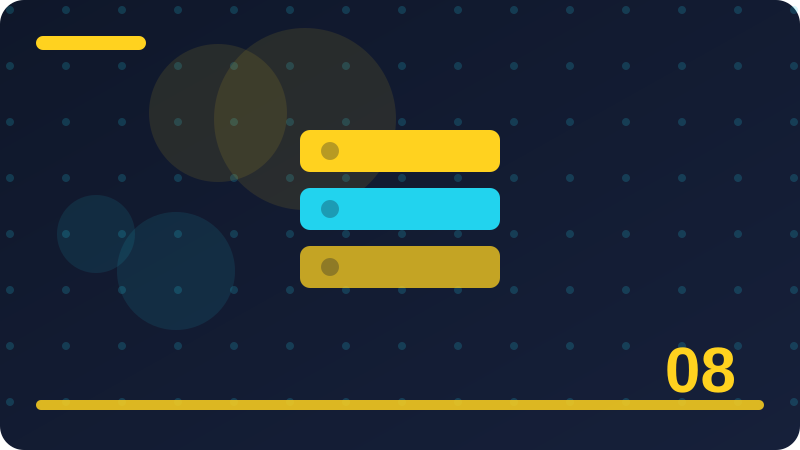

Chapter 8: Tuples, Sets and Dictionaries

Section 1
This section looks closely at What a tuple is, one building block inside Tuples, Sets and Dictionaries. It is worth slowing down here, because ideas that feel small at first often turn up again in much larger programs, and a clear understanding now will save you confusion later. Think of What a tuple is as a tool you are adding to a growing toolkit: you do not need to master every detail today, but you should know what it is for, when it helps, and what a sensible first example looks like. At its simplest, What a tuple is is about making your intention clear to both the computer and the next person who reads your code. The computer follows instructions literally, so vague thinking becomes a visible mistake, while clear thinking becomes a program that behaves as you expected. That is why examples in this section are deliberately small: with only a few lines to watch, you can see cause and effect without distraction, and you can trace exactly how each part contributes to the result. A short example is the best way to make What a tuple is concrete. Read the code slowly, line by line, and say what you think each line does before you run it. Then run it, compare the output with your prediction, and if they differ, treat that difference as useful information rather than a failure. Programmers learn more from a surprising result than from a result that merely confirms what they already believed, because surprise points to a gap in understanding. Beginners often stumble on What a tuple is for the same few reasons, and naming those reasons in advance makes them easier to avoid. One common problem is rushing past the example without running it, which leaves a fragile understanding that collapses at the first small change. Another is copying code without understanding it, which works until the copied code needs to be adapted. A third is changing several things at once, which makes it impossible to tell which change caused a new result. Beyond the first example, What a tuple is becomes useful when it is combined with ideas from earlier chapters. Programming is rarely about one idea in isolation; it is about combining small, reliable pieces into something larger. That is why this book returns to earlier ideas instead of leaving them behind. Each time you reuse an old idea in a new context, your understanding of both ideas deepens, and your programs become more flexible. To consolidate this section, try a tiny variation of the example before you continue. Change one value, one name, or one order, run the program again, and describe the difference in a sentence. That habit of deliberate variation is how programmers build intuition, and it takes only a few minutes. If you cannot explain the difference, you have found a useful question to investigate, and investigating it now will pay off in the next chapter.
point = (3, 4)
print(point[0])Check: What is the main idea behind What a tuple is in your own words?
Section 2
Begin with Tuples that cannot change, and with the question it helps you answer while you are learning Tuples, Sets and Dictionaries. Every new idea in programming earns its place by solving a real problem, not by sounding impressive, so this section starts from that problem. Once you can say in your own words why Tuples that cannot change exists, the details become much easier to remember, and the code you write afterwards tends to be clearer and more deliberate. The key to Tuples that cannot change is to connect the new idea with something you already understand. Programmers often explain a new concept by comparing it with an everyday action, such as sorting objects, following a recipe, or keeping a list, and that comparison helps at first. But an analogy is only a starting point: the section then moves from the everyday picture to the precise behaviour in Python, so that you are not misled when the real behaviour is slightly different from the picture. Work through the example for Tuples that cannot change as if you were the computer. Keep track of each value as it changes, and notice the order in which things happen, because order matters in programming far more than it does in ordinary writing. A line that looks harmless can change everything that follows, and a small change in order can turn a working program into one that behaves strangely. Tracing by hand is slow, but it builds the mental habit that makes debugging possible later. Watch out for the small details around Tuples that cannot change, because programming rewards attention to detail in a way that everyday language does not. A missing bracket, a misspelt name, or a value in the wrong place can stop a program or change its meaning, and the computer will not guess what you meant. This strictness can feel unfriendly at first, but it is also fair: the same code behaves the same way every time, so once you find a mistake, fixing it fixes the program reliably. Think about where Tuples that cannot change fits into a program you might actually want to write, such as a small tool, a game, a list manager, or a simple calculator. Real programs are built from the same building blocks you are learning here, repeated and combined in different ways. If you can picture a use for Tuples that cannot change outside this book, you are much more likely to remember it, and you will also start to notice it when you read other people's code. Before moving on, summarise Tuples that cannot change in two or three sentences of your own, without looking back at this section. Writing a summary forces you to decide what matters most, and it reveals gaps that silent reading can hide. If your summary feels vague, reread the example and try the variation exercise again.
colours = {'red', 'blue'}
print('red' in colours)Check: When would you use Tuples that cannot change in a small program?
Section 3
In Tuples, Sets and Dictionaries, When immutability helps is one of the ideas you will meet again and again, so it deserves a careful first look rather than a quick glance. This section explains the idea in plain language, shows a short example, and points out the mistakes that beginners most often make. You are not expected to memorise everything here; you are expected to recognise When immutability helps when you see it, to use it in a small program, and to know where to look when you need a reminder. When you meet When immutability helps, ask three questions before you write any code. First, what goes in? Second, what comes out? Third, what could go wrong if the input is empty, unusual, or not what you expected? Those three questions work for almost every topic in this book. They turn a passive reading exercise into an active investigation, and they prepare you to test your own code instead of hoping that it happens to be right. The example for When immutability helps is intentionally ordinary, because ordinary examples reveal the normal behaviour you will rely on every day. Fancy examples can impress, but they often hide the simple rule underneath layers of detail. Once the simple rule is clear, you can apply it to harder problems with confidence, and you will recognise the same rule when it appears inside a longer program written by someone else. As you practise When immutability helps, expect to make mistakes, and expect those mistakes to be informative. An error message is not a judgement on your ability; it is a clue, often pointing at the line where Python first noticed a problem. Read it, look at that line, and ask what Python expected to find there. Over time, you will start to recognise familiar messages and fix them quickly, which is one of the clearest signs that you are becoming a programmer. There is no single correct way to use When immutability helps in every situation, and part of learning programming is developing judgement about trade-offs. A shorter solution is not always clearer, and a more general solution is not always better for a small task. For now, favour the version that you can explain to someone else, because code that is easy to explain is usually easy to fix, easy to extend, and easy to trust. Finally, remember that When immutability helps is a step, not a destination. You will use it, forget parts of it, and relearn it in a richer context as your programs grow. That cycle is normal, and it is not a sign that you have failed to learn. Return to this section whenever you need it, use the idea in a real small program, and let repeated use turn a new idea into a familiar tool.
person = {'name': 'Ada'}
print(person['name'])Check: What mistake are beginners most likely to make with When immutability helps?
Section 4
This section looks closely at Packing and unpacking, one building block inside Tuples, Sets and Dictionaries. It is worth slowing down here, because ideas that feel small at first often turn up again in much larger programs, and a clear understanding now will save you confusion later. Think of Packing and unpacking as a tool you are adding to a growing toolkit: you do not need to master every detail today, but you should know what it is for, when it helps, and what a sensible first example looks like. At its simplest, Packing and unpacking is about making your intention clear to both the computer and the next person who reads your code. The computer follows instructions literally, so vague thinking becomes a visible mistake, while clear thinking becomes a program that behaves as you expected. That is why examples in this section are deliberately small: with only a few lines to watch, you can see cause and effect without distraction, and you can trace exactly how each part contributes to the result. A short example is the best way to make Packing and unpacking concrete. Read the code slowly, line by line, and say what you think each line does before you run it. Then run it, compare the output with your prediction, and if they differ, treat that difference as useful information rather than a failure. Programmers learn more from a surprising result than from a result that merely confirms what they already believed, because surprise points to a gap in understanding. Beginners often stumble on Packing and unpacking for the same few reasons, and naming those reasons in advance makes them easier to avoid. One common problem is rushing past the example without running it, which leaves a fragile understanding that collapses at the first small change. Another is copying code without understanding it, which works until the copied code needs to be adapted. A third is changing several things at once, which makes it impossible to tell which change caused a new result. Beyond the first example, Packing and unpacking becomes useful when it is combined with ideas from earlier chapters. Programming is rarely about one idea in isolation; it is about combining small, reliable pieces into something larger. That is why this book returns to earlier ideas instead of leaving them behind. Each time you reuse an old idea in a new context, your understanding of both ideas deepens, and your programs become more flexible. To consolidate this section, try a tiny variation of the example before you continue. Change one value, one name, or one order, run the program again, and describe the difference in a sentence. That habit of deliberate variation is how programmers build intuition, and it takes only a few minutes. If you cannot explain the difference, you have found a useful question to investigate, and investigating it now will pay off in the next chapter.
pair = (1, 2)
x, y = pair
print(x, y)Check: How would you explain Packing and unpacking to a friend who has never coded?
Section 5
Begin with Returning more than one value, and with the question it helps you answer while you are learning Tuples, Sets and Dictionaries. Every new idea in programming earns its place by solving a real problem, not by sounding impressive, so this section starts from that problem. Once you can say in your own words why Returning more than one value exists, the details become much easier to remember, and the code you write afterwards tends to be clearer and more deliberate. The key to Returning more than one value is to connect the new idea with something you already understand. Programmers often explain a new concept by comparing it with an everyday action, such as sorting objects, following a recipe, or keeping a list, and that comparison helps at first. But an analogy is only a starting point: the section then moves from the everyday picture to the precise behaviour in Python, so that you are not misled when the real behaviour is slightly different from the picture. Work through the example for Returning more than one value as if you were the computer. Keep track of each value as it changes, and notice the order in which things happen, because order matters in programming far more than it does in ordinary writing. A line that looks harmless can change everything that follows, and a small change in order can turn a working program into one that behaves strangely. Tracing by hand is slow, but it builds the mental habit that makes debugging possible later. Watch out for the small details around Returning more than one value, because programming rewards attention to detail in a way that everyday language does not. A missing bracket, a misspelt name, or a value in the wrong place can stop a program or change its meaning, and the computer will not guess what you meant. This strictness can feel unfriendly at first, but it is also fair: the same code behaves the same way every time, so once you find a mistake, fixing it fixes the program reliably. Think about where Returning more than one value fits into a program you might actually want to write, such as a small tool, a game, a list manager, or a simple calculator. Real programs are built from the same building blocks you are learning here, repeated and combined in different ways. If you can picture a use for Returning more than one value outside this book, you are much more likely to remember it, and you will also start to notice it when you read other people's code. Before moving on, summarise Returning more than one value in two or three sentences of your own, without looking back at this section. Writing a summary forces you to decide what matters most, and it reveals gaps that silent reading can hide. If your summary feels vague, reread the example and try the variation exercise again.
scores = {'Ada': 90}
print(scores.get('Ada'))Check: What would you change in the example to test Returning more than one value further?
Section 6
In Tuples, Sets and Dictionaries, Tuples as fixed records is one of the ideas you will meet again and again, so it deserves a careful first look rather than a quick glance. This section explains the idea in plain language, shows a short example, and points out the mistakes that beginners most often make. You are not expected to memorise everything here; you are expected to recognise Tuples as fixed records when you see it, to use it in a small program, and to know where to look when you need a reminder. When you meet Tuples as fixed records, ask three questions before you write any code. First, what goes in? Second, what comes out? Third, what could go wrong if the input is empty, unusual, or not what you expected? Those three questions work for almost every topic in this book. They turn a passive reading exercise into an active investigation, and they prepare you to test your own code instead of hoping that it happens to be right. The example for Tuples as fixed records is intentionally ordinary, because ordinary examples reveal the normal behaviour you will rely on every day. Fancy examples can impress, but they often hide the simple rule underneath layers of detail. Once the simple rule is clear, you can apply it to harder problems with confidence, and you will recognise the same rule when it appears inside a longer program written by someone else. As you practise Tuples as fixed records, expect to make mistakes, and expect those mistakes to be informative. An error message is not a judgement on your ability; it is a clue, often pointing at the line where Python first noticed a problem. Read it, look at that line, and ask what Python expected to find there. Over time, you will start to recognise familiar messages and fix them quickly, which is one of the clearest signs that you are becoming a programmer. There is no single correct way to use Tuples as fixed records in every situation, and part of learning programming is developing judgement about trade-offs. A shorter solution is not always clearer, and a more general solution is not always better for a small task. For now, favour the version that you can explain to someone else, because code that is easy to explain is usually easy to fix, easy to extend, and easy to trust. Finally, remember that Tuples as fixed records is a step, not a destination. You will use it, forget parts of it, and relearn it in a richer context as your programs grow. That cycle is normal, and it is not a sign that you have failed to learn. Return to this section whenever you need it, use the idea in a real small program, and let repeated use turn a new idea into a familiar tool.
point = (3, 4)
print(point[0])Check: Why does Tuples as fixed records matter for programs you want to build later?
Section 7
This section looks closely at Comparing tuples and lists, one building block inside Tuples, Sets and Dictionaries. It is worth slowing down here, because ideas that feel small at first often turn up again in much larger programs, and a clear understanding now will save you confusion later. Think of Comparing tuples and lists as a tool you are adding to a growing toolkit: you do not need to master every detail today, but you should know what it is for, when it helps, and what a sensible first example looks like. At its simplest, Comparing tuples and lists is about making your intention clear to both the computer and the next person who reads your code. The computer follows instructions literally, so vague thinking becomes a visible mistake, while clear thinking becomes a program that behaves as you expected. That is why examples in this section are deliberately small: with only a few lines to watch, you can see cause and effect without distraction, and you can trace exactly how each part contributes to the result. A short example is the best way to make Comparing tuples and lists concrete. Read the code slowly, line by line, and say what you think each line does before you run it. Then run it, compare the output with your prediction, and if they differ, treat that difference as useful information rather than a failure. Programmers learn more from a surprising result than from a result that merely confirms what they already believed, because surprise points to a gap in understanding. Beginners often stumble on Comparing tuples and lists for the same few reasons, and naming those reasons in advance makes them easier to avoid. One common problem is rushing past the example without running it, which leaves a fragile understanding that collapses at the first small change. Another is copying code without understanding it, which works until the copied code needs to be adapted. A third is changing several things at once, which makes it impossible to tell which change caused a new result. Beyond the first example, Comparing tuples and lists becomes useful when it is combined with ideas from earlier chapters. Programming is rarely about one idea in isolation; it is about combining small, reliable pieces into something larger. That is why this book returns to earlier ideas instead of leaving them behind. Each time you reuse an old idea in a new context, your understanding of both ideas deepens, and your programs become more flexible. To consolidate this section, try a tiny variation of the example before you continue. Change one value, one name, or one order, run the program again, and describe the difference in a sentence. That habit of deliberate variation is how programmers build intuition, and it takes only a few minutes. If you cannot explain the difference, you have found a useful question to investigate, and investigating it now will pay off in the next chapter.
colours = {'red', 'blue'}
print('red' in colours)Check: What is the main idea behind Comparing tuples and lists in your own words?
Section 8
Begin with What a set is, and with the question it helps you answer while you are learning Tuples, Sets and Dictionaries. Every new idea in programming earns its place by solving a real problem, not by sounding impressive, so this section starts from that problem. Once you can say in your own words why What a set is exists, the details become much easier to remember, and the code you write afterwards tends to be clearer and more deliberate. The key to What a set is is to connect the new idea with something you already understand. Programmers often explain a new concept by comparing it with an everyday action, such as sorting objects, following a recipe, or keeping a list, and that comparison helps at first. But an analogy is only a starting point: the section then moves from the everyday picture to the precise behaviour in Python, so that you are not misled when the real behaviour is slightly different from the picture. Work through the example for What a set is as if you were the computer. Keep track of each value as it changes, and notice the order in which things happen, because order matters in programming far more than it does in ordinary writing. A line that looks harmless can change everything that follows, and a small change in order can turn a working program into one that behaves strangely. Tracing by hand is slow, but it builds the mental habit that makes debugging possible later. Watch out for the small details around What a set is, because programming rewards attention to detail in a way that everyday language does not. A missing bracket, a misspelt name, or a value in the wrong place can stop a program or change its meaning, and the computer will not guess what you meant. This strictness can feel unfriendly at first, but it is also fair: the same code behaves the same way every time, so once you find a mistake, fixing it fixes the program reliably. Think about where What a set is fits into a program you might actually want to write, such as a small tool, a game, a list manager, or a simple calculator. Real programs are built from the same building blocks you are learning here, repeated and combined in different ways. If you can picture a use for What a set is outside this book, you are much more likely to remember it, and you will also start to notice it when you read other people's code. Before moving on, summarise What a set is in two or three sentences of your own, without looking back at this section. Writing a summary forces you to decide what matters most, and it reveals gaps that silent reading can hide. If your summary feels vague, reread the example and try the variation exercise again.
person = {'name': 'Ada'}
print(person['name'])Check: When would you use What a set is in a small program?
Section 9
In Tuples, Sets and Dictionaries, Sets remove duplicates is one of the ideas you will meet again and again, so it deserves a careful first look rather than a quick glance. This section explains the idea in plain language, shows a short example, and points out the mistakes that beginners most often make. You are not expected to memorise everything here; you are expected to recognise Sets remove duplicates when you see it, to use it in a small program, and to know where to look when you need a reminder. When you meet Sets remove duplicates, ask three questions before you write any code. First, what goes in? Second, what comes out? Third, what could go wrong if the input is empty, unusual, or not what you expected? Those three questions work for almost every topic in this book. They turn a passive reading exercise into an active investigation, and they prepare you to test your own code instead of hoping that it happens to be right. The example for Sets remove duplicates is intentionally ordinary, because ordinary examples reveal the normal behaviour you will rely on every day. Fancy examples can impress, but they often hide the simple rule underneath layers of detail. Once the simple rule is clear, you can apply it to harder problems with confidence, and you will recognise the same rule when it appears inside a longer program written by someone else. As you practise Sets remove duplicates, expect to make mistakes, and expect those mistakes to be informative. An error message is not a judgement on your ability; it is a clue, often pointing at the line where Python first noticed a problem. Read it, look at that line, and ask what Python expected to find there. Over time, you will start to recognise familiar messages and fix them quickly, which is one of the clearest signs that you are becoming a programmer. There is no single correct way to use Sets remove duplicates in every situation, and part of learning programming is developing judgement about trade-offs. A shorter solution is not always clearer, and a more general solution is not always better for a small task. For now, favour the version that you can explain to someone else, because code that is easy to explain is usually easy to fix, easy to extend, and easy to trust. Finally, remember that Sets remove duplicates is a step, not a destination. You will use it, forget parts of it, and relearn it in a richer context as your programs grow. That cycle is normal, and it is not a sign that you have failed to learn. Return to this section whenever you need it, use the idea in a real small program, and let repeated use turn a new idea into a familiar tool.
pair = (1, 2)
x, y = pair
print(x, y)Check: What mistake are beginners most likely to make with Sets remove duplicates?
Section 10
This section looks closely at Adding to a set, one building block inside Tuples, Sets and Dictionaries. It is worth slowing down here, because ideas that feel small at first often turn up again in much larger programs, and a clear understanding now will save you confusion later. Think of Adding to a set as a tool you are adding to a growing toolkit: you do not need to master every detail today, but you should know what it is for, when it helps, and what a sensible first example looks like. At its simplest, Adding to a set is about making your intention clear to both the computer and the next person who reads your code. The computer follows instructions literally, so vague thinking becomes a visible mistake, while clear thinking becomes a program that behaves as you expected. That is why examples in this section are deliberately small: with only a few lines to watch, you can see cause and effect without distraction, and you can trace exactly how each part contributes to the result. A short example is the best way to make Adding to a set concrete. Read the code slowly, line by line, and say what you think each line does before you run it. Then run it, compare the output with your prediction, and if they differ, treat that difference as useful information rather than a failure. Programmers learn more from a surprising result than from a result that merely confirms what they already believed, because surprise points to a gap in understanding. Beginners often stumble on Adding to a set for the same few reasons, and naming those reasons in advance makes them easier to avoid. One common problem is rushing past the example without running it, which leaves a fragile understanding that collapses at the first small change. Another is copying code without understanding it, which works until the copied code needs to be adapted. A third is changing several things at once, which makes it impossible to tell which change caused a new result. Beyond the first example, Adding to a set becomes useful when it is combined with ideas from earlier chapters. Programming is rarely about one idea in isolation; it is about combining small, reliable pieces into something larger. That is why this book returns to earlier ideas instead of leaving them behind. Each time you reuse an old idea in a new context, your understanding of both ideas deepens, and your programs become more flexible. To consolidate this section, try a tiny variation of the example before you continue. Change one value, one name, or one order, run the program again, and describe the difference in a sentence. That habit of deliberate variation is how programmers build intuition, and it takes only a few minutes. If you cannot explain the difference, you have found a useful question to investigate, and investigating it now will pay off in the next chapter.
scores = {'Ada': 90}
print(scores.get('Ada'))Check: How would you explain Adding to a set to a friend who has never coded?
Section 11
Begin with Removing from a set, and with the question it helps you answer while you are learning Tuples, Sets and Dictionaries. Every new idea in programming earns its place by solving a real problem, not by sounding impressive, so this section starts from that problem. Once you can say in your own words why Removing from a set exists, the details become much easier to remember, and the code you write afterwards tends to be clearer and more deliberate. The key to Removing from a set is to connect the new idea with something you already understand. Programmers often explain a new concept by comparing it with an everyday action, such as sorting objects, following a recipe, or keeping a list, and that comparison helps at first. But an analogy is only a starting point: the section then moves from the everyday picture to the precise behaviour in Python, so that you are not misled when the real behaviour is slightly different from the picture. Work through the example for Removing from a set as if you were the computer. Keep track of each value as it changes, and notice the order in which things happen, because order matters in programming far more than it does in ordinary writing. A line that looks harmless can change everything that follows, and a small change in order can turn a working program into one that behaves strangely. Tracing by hand is slow, but it builds the mental habit that makes debugging possible later. Watch out for the small details around Removing from a set, because programming rewards attention to detail in a way that everyday language does not. A missing bracket, a misspelt name, or a value in the wrong place can stop a program or change its meaning, and the computer will not guess what you meant. This strictness can feel unfriendly at first, but it is also fair: the same code behaves the same way every time, so once you find a mistake, fixing it fixes the program reliably. Think about where Removing from a set fits into a program you might actually want to write, such as a small tool, a game, a list manager, or a simple calculator. Real programs are built from the same building blocks you are learning here, repeated and combined in different ways. If you can picture a use for Removing from a set outside this book, you are much more likely to remember it, and you will also start to notice it when you read other people's code. Before moving on, summarise Removing from a set in two or three sentences of your own, without looking back at this section. Writing a summary forces you to decide what matters most, and it reveals gaps that silent reading can hide. If your summary feels vague, reread the example and try the variation exercise again.
point = (3, 4)
print(point[0])Check: What would you change in the example to test Removing from a set further?
Section 12
In Tuples, Sets and Dictionaries, Membership in a set is one of the ideas you will meet again and again, so it deserves a careful first look rather than a quick glance. This section explains the idea in plain language, shows a short example, and points out the mistakes that beginners most often make. You are not expected to memorise everything here; you are expected to recognise Membership in a set when you see it, to use it in a small program, and to know where to look when you need a reminder. When you meet Membership in a set, ask three questions before you write any code. First, what goes in? Second, what comes out? Third, what could go wrong if the input is empty, unusual, or not what you expected? Those three questions work for almost every topic in this book. They turn a passive reading exercise into an active investigation, and they prepare you to test your own code instead of hoping that it happens to be right. The example for Membership in a set is intentionally ordinary, because ordinary examples reveal the normal behaviour you will rely on every day. Fancy examples can impress, but they often hide the simple rule underneath layers of detail. Once the simple rule is clear, you can apply it to harder problems with confidence, and you will recognise the same rule when it appears inside a longer program written by someone else. As you practise Membership in a set, expect to make mistakes, and expect those mistakes to be informative. An error message is not a judgement on your ability; it is a clue, often pointing at the line where Python first noticed a problem. Read it, look at that line, and ask what Python expected to find there. Over time, you will start to recognise familiar messages and fix them quickly, which is one of the clearest signs that you are becoming a programmer. There is no single correct way to use Membership in a set in every situation, and part of learning programming is developing judgement about trade-offs. A shorter solution is not always clearer, and a more general solution is not always better for a small task. For now, favour the version that you can explain to someone else, because code that is easy to explain is usually easy to fix, easy to extend, and easy to trust. Finally, remember that Membership in a set is a step, not a destination. You will use it, forget parts of it, and relearn it in a richer context as your programs grow. That cycle is normal, and it is not a sign that you have failed to learn. Return to this section whenever you need it, use the idea in a real small program, and let repeated use turn a new idea into a familiar tool.
colours = {'red', 'blue'}
print('red' in colours)Check: Why does Membership in a set matter for programs you want to build later?
Section 13
This section looks closely at Union of two sets, one building block inside Tuples, Sets and Dictionaries. It is worth slowing down here, because ideas that feel small at first often turn up again in much larger programs, and a clear understanding now will save you confusion later. Think of Union of two sets as a tool you are adding to a growing toolkit: you do not need to master every detail today, but you should know what it is for, when it helps, and what a sensible first example looks like. At its simplest, Union of two sets is about making your intention clear to both the computer and the next person who reads your code. The computer follows instructions literally, so vague thinking becomes a visible mistake, while clear thinking becomes a program that behaves as you expected. That is why examples in this section are deliberately small: with only a few lines to watch, you can see cause and effect without distraction, and you can trace exactly how each part contributes to the result. A short example is the best way to make Union of two sets concrete. Read the code slowly, line by line, and say what you think each line does before you run it. Then run it, compare the output with your prediction, and if they differ, treat that difference as useful information rather than a failure. Programmers learn more from a surprising result than from a result that merely confirms what they already believed, because surprise points to a gap in understanding. Beginners often stumble on Union of two sets for the same few reasons, and naming those reasons in advance makes them easier to avoid. One common problem is rushing past the example without running it, which leaves a fragile understanding that collapses at the first small change. Another is copying code without understanding it, which works until the copied code needs to be adapted. A third is changing several things at once, which makes it impossible to tell which change caused a new result. Beyond the first example, Union of two sets becomes useful when it is combined with ideas from earlier chapters. Programming is rarely about one idea in isolation; it is about combining small, reliable pieces into something larger. That is why this book returns to earlier ideas instead of leaving them behind. Each time you reuse an old idea in a new context, your understanding of both ideas deepens, and your programs become more flexible. To consolidate this section, try a tiny variation of the example before you continue. Change one value, one name, or one order, run the program again, and describe the difference in a sentence. That habit of deliberate variation is how programmers build intuition, and it takes only a few minutes. If you cannot explain the difference, you have found a useful question to investigate, and investigating it now will pay off in the next chapter.
person = {'name': 'Ada'}
print(person['name'])Check: What is the main idea behind Union of two sets in your own words?
Section 14
Begin with Intersection of two sets, and with the question it helps you answer while you are learning Tuples, Sets and Dictionaries. Every new idea in programming earns its place by solving a real problem, not by sounding impressive, so this section starts from that problem. Once you can say in your own words why Intersection of two sets exists, the details become much easier to remember, and the code you write afterwards tends to be clearer and more deliberate. The key to Intersection of two sets is to connect the new idea with something you already understand. Programmers often explain a new concept by comparing it with an everyday action, such as sorting objects, following a recipe, or keeping a list, and that comparison helps at first. But an analogy is only a starting point: the section then moves from the everyday picture to the precise behaviour in Python, so that you are not misled when the real behaviour is slightly different from the picture. Work through the example for Intersection of two sets as if you were the computer. Keep track of each value as it changes, and notice the order in which things happen, because order matters in programming far more than it does in ordinary writing. A line that looks harmless can change everything that follows, and a small change in order can turn a working program into one that behaves strangely. Tracing by hand is slow, but it builds the mental habit that makes debugging possible later. Watch out for the small details around Intersection of two sets, because programming rewards attention to detail in a way that everyday language does not. A missing bracket, a misspelt name, or a value in the wrong place can stop a program or change its meaning, and the computer will not guess what you meant. This strictness can feel unfriendly at first, but it is also fair: the same code behaves the same way every time, so once you find a mistake, fixing it fixes the program reliably. Think about where Intersection of two sets fits into a program you might actually want to write, such as a small tool, a game, a list manager, or a simple calculator. Real programs are built from the same building blocks you are learning here, repeated and combined in different ways. If you can picture a use for Intersection of two sets outside this book, you are much more likely to remember it, and you will also start to notice it when you read other people's code. Before moving on, summarise Intersection of two sets in two or three sentences of your own, without looking back at this section. Writing a summary forces you to decide what matters most, and it reveals gaps that silent reading can hide. If your summary feels vague, reread the example and try the variation exercise again.
pair = (1, 2)
x, y = pair
print(x, y)Check: When would you use Intersection of two sets in a small program?
Section 15
In Tuples, Sets and Dictionaries, Difference between sets is one of the ideas you will meet again and again, so it deserves a careful first look rather than a quick glance. This section explains the idea in plain language, shows a short example, and points out the mistakes that beginners most often make. You are not expected to memorise everything here; you are expected to recognise Difference between sets when you see it, to use it in a small program, and to know where to look when you need a reminder. When you meet Difference between sets, ask three questions before you write any code. First, what goes in? Second, what comes out? Third, what could go wrong if the input is empty, unusual, or not what you expected? Those three questions work for almost every topic in this book. They turn a passive reading exercise into an active investigation, and they prepare you to test your own code instead of hoping that it happens to be right. The example for Difference between sets is intentionally ordinary, because ordinary examples reveal the normal behaviour you will rely on every day. Fancy examples can impress, but they often hide the simple rule underneath layers of detail. Once the simple rule is clear, you can apply it to harder problems with confidence, and you will recognise the same rule when it appears inside a longer program written by someone else. As you practise Difference between sets, expect to make mistakes, and expect those mistakes to be informative. An error message is not a judgement on your ability; it is a clue, often pointing at the line where Python first noticed a problem. Read it, look at that line, and ask what Python expected to find there. Over time, you will start to recognise familiar messages and fix them quickly, which is one of the clearest signs that you are becoming a programmer. There is no single correct way to use Difference between sets in every situation, and part of learning programming is developing judgement about trade-offs. A shorter solution is not always clearer, and a more general solution is not always better for a small task. For now, favour the version that you can explain to someone else, because code that is easy to explain is usually easy to fix, easy to extend, and easy to trust. Finally, remember that Difference between sets is a step, not a destination. You will use it, forget parts of it, and relearn it in a richer context as your programs grow. That cycle is normal, and it is not a sign that you have failed to learn. Return to this section whenever you need it, use the idea in a real small program, and let repeated use turn a new idea into a familiar tool.
scores = {'Ada': 90}
print(scores.get('Ada'))Check: What mistake are beginners most likely to make with Difference between sets?
Section 16
This section looks closely at Sets in data cleaning, one building block inside Tuples, Sets and Dictionaries. It is worth slowing down here, because ideas that feel small at first often turn up again in much larger programs, and a clear understanding now will save you confusion later. Think of Sets in data cleaning as a tool you are adding to a growing toolkit: you do not need to master every detail today, but you should know what it is for, when it helps, and what a sensible first example looks like. At its simplest, Sets in data cleaning is about making your intention clear to both the computer and the next person who reads your code. The computer follows instructions literally, so vague thinking becomes a visible mistake, while clear thinking becomes a program that behaves as you expected. That is why examples in this section are deliberately small: with only a few lines to watch, you can see cause and effect without distraction, and you can trace exactly how each part contributes to the result. A short example is the best way to make Sets in data cleaning concrete. Read the code slowly, line by line, and say what you think each line does before you run it. Then run it, compare the output with your prediction, and if they differ, treat that difference as useful information rather than a failure. Programmers learn more from a surprising result than from a result that merely confirms what they already believed, because surprise points to a gap in understanding. Beginners often stumble on Sets in data cleaning for the same few reasons, and naming those reasons in advance makes them easier to avoid. One common problem is rushing past the example without running it, which leaves a fragile understanding that collapses at the first small change. Another is copying code without understanding it, which works until the copied code needs to be adapted. A third is changing several things at once, which makes it impossible to tell which change caused a new result. Beyond the first example, Sets in data cleaning becomes useful when it is combined with ideas from earlier chapters. Programming is rarely about one idea in isolation; it is about combining small, reliable pieces into something larger. That is why this book returns to earlier ideas instead of leaving them behind. Each time you reuse an old idea in a new context, your understanding of both ideas deepens, and your programs become more flexible. To consolidate this section, try a tiny variation of the example before you continue. Change one value, one name, or one order, run the program again, and describe the difference in a sentence. That habit of deliberate variation is how programmers build intuition, and it takes only a few minutes. If you cannot explain the difference, you have found a useful question to investigate, and investigating it now will pay off in the next chapter.
point = (3, 4)
print(point[0])Check: How would you explain Sets in data cleaning to a friend who has never coded?
Section 17
Begin with When order does not matter, and with the question it helps you answer while you are learning Tuples, Sets and Dictionaries. Every new idea in programming earns its place by solving a real problem, not by sounding impressive, so this section starts from that problem. Once you can say in your own words why When order does not matter exists, the details become much easier to remember, and the code you write afterwards tends to be clearer and more deliberate. The key to When order does not matter is to connect the new idea with something you already understand. Programmers often explain a new concept by comparing it with an everyday action, such as sorting objects, following a recipe, or keeping a list, and that comparison helps at first. But an analogy is only a starting point: the section then moves from the everyday picture to the precise behaviour in Python, so that you are not misled when the real behaviour is slightly different from the picture. Work through the example for When order does not matter as if you were the computer. Keep track of each value as it changes, and notice the order in which things happen, because order matters in programming far more than it does in ordinary writing. A line that looks harmless can change everything that follows, and a small change in order can turn a working program into one that behaves strangely. Tracing by hand is slow, but it builds the mental habit that makes debugging possible later. Watch out for the small details around When order does not matter, because programming rewards attention to detail in a way that everyday language does not. A missing bracket, a misspelt name, or a value in the wrong place can stop a program or change its meaning, and the computer will not guess what you meant. This strictness can feel unfriendly at first, but it is also fair: the same code behaves the same way every time, so once you find a mistake, fixing it fixes the program reliably. Think about where When order does not matter fits into a program you might actually want to write, such as a small tool, a game, a list manager, or a simple calculator. Real programs are built from the same building blocks you are learning here, repeated and combined in different ways. If you can picture a use for When order does not matter outside this book, you are much more likely to remember it, and you will also start to notice it when you read other people's code. Before moving on, summarise When order does not matter in two or three sentences of your own, without looking back at this section. Writing a summary forces you to decide what matters most, and it reveals gaps that silent reading can hide. If your summary feels vague, reread the example and try the variation exercise again.
colours = {'red', 'blue'}
print('red' in colours)Check: What would you change in the example to test When order does not matter further?
Section 18
In Tuples, Sets and Dictionaries, What a dictionary is is one of the ideas you will meet again and again, so it deserves a careful first look rather than a quick glance. This section explains the idea in plain language, shows a short example, and points out the mistakes that beginners most often make. You are not expected to memorise everything here; you are expected to recognise What a dictionary is when you see it, to use it in a small program, and to know where to look when you need a reminder. When you meet What a dictionary is, ask three questions before you write any code. First, what goes in? Second, what comes out? Third, what could go wrong if the input is empty, unusual, or not what you expected? Those three questions work for almost every topic in this book. They turn a passive reading exercise into an active investigation, and they prepare you to test your own code instead of hoping that it happens to be right. The example for What a dictionary is is intentionally ordinary, because ordinary examples reveal the normal behaviour you will rely on every day. Fancy examples can impress, but they often hide the simple rule underneath layers of detail. Once the simple rule is clear, you can apply it to harder problems with confidence, and you will recognise the same rule when it appears inside a longer program written by someone else. As you practise What a dictionary is, expect to make mistakes, and expect those mistakes to be informative. An error message is not a judgement on your ability; it is a clue, often pointing at the line where Python first noticed a problem. Read it, look at that line, and ask what Python expected to find there. Over time, you will start to recognise familiar messages and fix them quickly, which is one of the clearest signs that you are becoming a programmer. There is no single correct way to use What a dictionary is in every situation, and part of learning programming is developing judgement about trade-offs. A shorter solution is not always clearer, and a more general solution is not always better for a small task. For now, favour the version that you can explain to someone else, because code that is easy to explain is usually easy to fix, easy to extend, and easy to trust. Finally, remember that What a dictionary is is a step, not a destination. You will use it, forget parts of it, and relearn it in a richer context as your programs grow. That cycle is normal, and it is not a sign that you have failed to learn. Return to this section whenever you need it, use the idea in a real small program, and let repeated use turn a new idea into a familiar tool.
person = {'name': 'Ada'}
print(person['name'])Check: Why does What a dictionary is matter for programs you want to build later?
Section 19
This section looks closely at Keys and values, one building block inside Tuples, Sets and Dictionaries. It is worth slowing down here, because ideas that feel small at first often turn up again in much larger programs, and a clear understanding now will save you confusion later. Think of Keys and values as a tool you are adding to a growing toolkit: you do not need to master every detail today, but you should know what it is for, when it helps, and what a sensible first example looks like. At its simplest, Keys and values is about making your intention clear to both the computer and the next person who reads your code. The computer follows instructions literally, so vague thinking becomes a visible mistake, while clear thinking becomes a program that behaves as you expected. That is why examples in this section are deliberately small: with only a few lines to watch, you can see cause and effect without distraction, and you can trace exactly how each part contributes to the result. A short example is the best way to make Keys and values concrete. Read the code slowly, line by line, and say what you think each line does before you run it. Then run it, compare the output with your prediction, and if they differ, treat that difference as useful information rather than a failure. Programmers learn more from a surprising result than from a result that merely confirms what they already believed, because surprise points to a gap in understanding. Beginners often stumble on Keys and values for the same few reasons, and naming those reasons in advance makes them easier to avoid. One common problem is rushing past the example without running it, which leaves a fragile understanding that collapses at the first small change. Another is copying code without understanding it, which works until the copied code needs to be adapted. A third is changing several things at once, which makes it impossible to tell which change caused a new result. Beyond the first example, Keys and values becomes useful when it is combined with ideas from earlier chapters. Programming is rarely about one idea in isolation; it is about combining small, reliable pieces into something larger. That is why this book returns to earlier ideas instead of leaving them behind. Each time you reuse an old idea in a new context, your understanding of both ideas deepens, and your programs become more flexible. To consolidate this section, try a tiny variation of the example before you continue. Change one value, one name, or one order, run the program again, and describe the difference in a sentence. That habit of deliberate variation is how programmers build intuition, and it takes only a few minutes. If you cannot explain the difference, you have found a useful question to investigate, and investigating it now will pay off in the next chapter.
pair = (1, 2)
x, y = pair
print(x, y)Check: What is the main idea behind Keys and values in your own words?
Section 20
Begin with Looking up a value, and with the question it helps you answer while you are learning Tuples, Sets and Dictionaries. Every new idea in programming earns its place by solving a real problem, not by sounding impressive, so this section starts from that problem. Once you can say in your own words why Looking up a value exists, the details become much easier to remember, and the code you write afterwards tends to be clearer and more deliberate. The key to Looking up a value is to connect the new idea with something you already understand. Programmers often explain a new concept by comparing it with an everyday action, such as sorting objects, following a recipe, or keeping a list, and that comparison helps at first. But an analogy is only a starting point: the section then moves from the everyday picture to the precise behaviour in Python, so that you are not misled when the real behaviour is slightly different from the picture. Work through the example for Looking up a value as if you were the computer. Keep track of each value as it changes, and notice the order in which things happen, because order matters in programming far more than it does in ordinary writing. A line that looks harmless can change everything that follows, and a small change in order can turn a working program into one that behaves strangely. Tracing by hand is slow, but it builds the mental habit that makes debugging possible later. Watch out for the small details around Looking up a value, because programming rewards attention to detail in a way that everyday language does not. A missing bracket, a misspelt name, or a value in the wrong place can stop a program or change its meaning, and the computer will not guess what you meant. This strictness can feel unfriendly at first, but it is also fair: the same code behaves the same way every time, so once you find a mistake, fixing it fixes the program reliably. Think about where Looking up a value fits into a program you might actually want to write, such as a small tool, a game, a list manager, or a simple calculator. Real programs are built from the same building blocks you are learning here, repeated and combined in different ways. If you can picture a use for Looking up a value outside this book, you are much more likely to remember it, and you will also start to notice it when you read other people's code. Before moving on, summarise Looking up a value in two or three sentences of your own, without looking back at this section. Writing a summary forces you to decide what matters most, and it reveals gaps that silent reading can hide. If your summary feels vague, reread the example and try the variation exercise again.
scores = {'Ada': 90}
print(scores.get('Ada'))Check: When would you use Looking up a value in a small program?
Section 21
In Tuples, Sets and Dictionaries, Adding a new entry is one of the ideas you will meet again and again, so it deserves a careful first look rather than a quick glance. This section explains the idea in plain language, shows a short example, and points out the mistakes that beginners most often make. You are not expected to memorise everything here; you are expected to recognise Adding a new entry when you see it, to use it in a small program, and to know where to look when you need a reminder. When you meet Adding a new entry, ask three questions before you write any code. First, what goes in? Second, what comes out? Third, what could go wrong if the input is empty, unusual, or not what you expected? Those three questions work for almost every topic in this book. They turn a passive reading exercise into an active investigation, and they prepare you to test your own code instead of hoping that it happens to be right. The example for Adding a new entry is intentionally ordinary, because ordinary examples reveal the normal behaviour you will rely on every day. Fancy examples can impress, but they often hide the simple rule underneath layers of detail. Once the simple rule is clear, you can apply it to harder problems with confidence, and you will recognise the same rule when it appears inside a longer program written by someone else. As you practise Adding a new entry, expect to make mistakes, and expect those mistakes to be informative. An error message is not a judgement on your ability; it is a clue, often pointing at the line where Python first noticed a problem. Read it, look at that line, and ask what Python expected to find there. Over time, you will start to recognise familiar messages and fix them quickly, which is one of the clearest signs that you are becoming a programmer. There is no single correct way to use Adding a new entry in every situation, and part of learning programming is developing judgement about trade-offs. A shorter solution is not always clearer, and a more general solution is not always better for a small task. For now, favour the version that you can explain to someone else, because code that is easy to explain is usually easy to fix, easy to extend, and easy to trust. Finally, remember that Adding a new entry is a step, not a destination. You will use it, forget parts of it, and relearn it in a richer context as your programs grow. That cycle is normal, and it is not a sign that you have failed to learn. Return to this section whenever you need it, use the idea in a real small program, and let repeated use turn a new idea into a familiar tool.
point = (3, 4)
print(point[0])Check: What mistake are beginners most likely to make with Adding a new entry?
Section 22
This section looks closely at Changing an entry, one building block inside Tuples, Sets and Dictionaries. It is worth slowing down here, because ideas that feel small at first often turn up again in much larger programs, and a clear understanding now will save you confusion later. Think of Changing an entry as a tool you are adding to a growing toolkit: you do not need to master every detail today, but you should know what it is for, when it helps, and what a sensible first example looks like. At its simplest, Changing an entry is about making your intention clear to both the computer and the next person who reads your code. The computer follows instructions literally, so vague thinking becomes a visible mistake, while clear thinking becomes a program that behaves as you expected. That is why examples in this section are deliberately small: with only a few lines to watch, you can see cause and effect without distraction, and you can trace exactly how each part contributes to the result. A short example is the best way to make Changing an entry concrete. Read the code slowly, line by line, and say what you think each line does before you run it. Then run it, compare the output with your prediction, and if they differ, treat that difference as useful information rather than a failure. Programmers learn more from a surprising result than from a result that merely confirms what they already believed, because surprise points to a gap in understanding. Beginners often stumble on Changing an entry for the same few reasons, and naming those reasons in advance makes them easier to avoid. One common problem is rushing past the example without running it, which leaves a fragile understanding that collapses at the first small change. Another is copying code without understanding it, which works until the copied code needs to be adapted. A third is changing several things at once, which makes it impossible to tell which change caused a new result. Beyond the first example, Changing an entry becomes useful when it is combined with ideas from earlier chapters. Programming is rarely about one idea in isolation; it is about combining small, reliable pieces into something larger. That is why this book returns to earlier ideas instead of leaving them behind. Each time you reuse an old idea in a new context, your understanding of both ideas deepens, and your programs become more flexible. To consolidate this section, try a tiny variation of the example before you continue. Change one value, one name, or one order, run the program again, and describe the difference in a sentence. That habit of deliberate variation is how programmers build intuition, and it takes only a few minutes. If you cannot explain the difference, you have found a useful question to investigate, and investigating it now will pay off in the next chapter.
colours = {'red', 'blue'}
print('red' in colours)Check: How would you explain Changing an entry to a friend who has never coded?
Section 23
Begin with Removing an entry, and with the question it helps you answer while you are learning Tuples, Sets and Dictionaries. Every new idea in programming earns its place by solving a real problem, not by sounding impressive, so this section starts from that problem. Once you can say in your own words why Removing an entry exists, the details become much easier to remember, and the code you write afterwards tends to be clearer and more deliberate. The key to Removing an entry is to connect the new idea with something you already understand. Programmers often explain a new concept by comparing it with an everyday action, such as sorting objects, following a recipe, or keeping a list, and that comparison helps at first. But an analogy is only a starting point: the section then moves from the everyday picture to the precise behaviour in Python, so that you are not misled when the real behaviour is slightly different from the picture. Work through the example for Removing an entry as if you were the computer. Keep track of each value as it changes, and notice the order in which things happen, because order matters in programming far more than it does in ordinary writing. A line that looks harmless can change everything that follows, and a small change in order can turn a working program into one that behaves strangely. Tracing by hand is slow, but it builds the mental habit that makes debugging possible later. Watch out for the small details around Removing an entry, because programming rewards attention to detail in a way that everyday language does not. A missing bracket, a misspelt name, or a value in the wrong place can stop a program or change its meaning, and the computer will not guess what you meant. This strictness can feel unfriendly at first, but it is also fair: the same code behaves the same way every time, so once you find a mistake, fixing it fixes the program reliably. Think about where Removing an entry fits into a program you might actually want to write, such as a small tool, a game, a list manager, or a simple calculator. Real programs are built from the same building blocks you are learning here, repeated and combined in different ways. If you can picture a use for Removing an entry outside this book, you are much more likely to remember it, and you will also start to notice it when you read other people's code. Before moving on, summarise Removing an entry in two or three sentences of your own, without looking back at this section. Writing a summary forces you to decide what matters most, and it reveals gaps that silent reading can hide. If your summary feels vague, reread the example and try the variation exercise again. A short, accurate summary is a better sign of learning than a long page of notes copied from the text.
person = {'name': 'Ada'}
print(person['name'])Check: What would you change in the example to test Removing an entry further?
Section 24
In Tuples, Sets and Dictionaries, Checking for a key is one of the ideas you will meet again and again, so it deserves a careful first look rather than a quick glance. This section explains the idea in plain language, shows a short example, and points out the mistakes that beginners most often make. You are not expected to memorise everything here; you are expected to recognise Checking for a key when you see it, to use it in a small program, and to know where to look when you need a reminder. When you meet Checking for a key, ask three questions before you write any code. First, what goes in? Second, what comes out? Third, what could go wrong if the input is empty, unusual, or not what you expected? Those three questions work for almost every topic in this book. They turn a passive reading exercise into an active investigation, and they prepare you to test your own code instead of hoping that it happens to be right. The example for Checking for a key is intentionally ordinary, because ordinary examples reveal the normal behaviour you will rely on every day. Fancy examples can impress, but they often hide the simple rule underneath layers of detail. Once the simple rule is clear, you can apply it to harder problems with confidence, and you will recognise the same rule when it appears inside a longer program written by someone else. As you practise Checking for a key, expect to make mistakes, and expect those mistakes to be informative. An error message is not a judgement on your ability; it is a clue, often pointing at the line where Python first noticed a problem. Read it, look at that line, and ask what Python expected to find there. Over time, you will start to recognise familiar messages and fix them quickly, which is one of the clearest signs that you are becoming a programmer. There is no single correct way to use Checking for a key in every situation, and part of learning programming is developing judgement about trade-offs. A shorter solution is not always clearer, and a more general solution is not always better for a small task. For now, favour the version that you can explain to someone else, because code that is easy to explain is usually easy to fix, easy to extend, and easy to trust. Finally, remember that Checking for a key is a step, not a destination. You will use it, forget parts of it, and relearn it in a richer context as your programs grow. That cycle is normal, and it is not a sign that you have failed to learn. Return to this section whenever you need it, use the idea in a real small program, and let repeated use turn a new idea into a familiar tool.
pair = (1, 2)
x, y = pair
print(x, y)Check: Why does Checking for a key matter for programs you want to build later?
Section 25
This section looks closely at Default values, one building block inside Tuples, Sets and Dictionaries. It is worth slowing down here, because ideas that feel small at first often turn up again in much larger programs, and a clear understanding now will save you confusion later. Think of Default values as a tool you are adding to a growing toolkit: you do not need to master every detail today, but you should know what it is for, when it helps, and what a sensible first example looks like. At its simplest, Default values is about making your intention clear to both the computer and the next person who reads your code. The computer follows instructions literally, so vague thinking becomes a visible mistake, while clear thinking becomes a program that behaves as you expected. That is why examples in this section are deliberately small: with only a few lines to watch, you can see cause and effect without distraction, and you can trace exactly how each part contributes to the result. A short example is the best way to make Default values concrete. Read the code slowly, line by line, and say what you think each line does before you run it. Then run it, compare the output with your prediction, and if they differ, treat that difference as useful information rather than a failure. Programmers learn more from a surprising result than from a result that merely confirms what they already believed, because surprise points to a gap in understanding. Beginners often stumble on Default values for the same few reasons, and naming those reasons in advance makes them easier to avoid. One common problem is rushing past the example without running it, which leaves a fragile understanding that collapses at the first small change. Another is copying code without understanding it, which works until the copied code needs to be adapted. A third is changing several things at once, which makes it impossible to tell which change caused a new result. Beyond the first example, Default values becomes useful when it is combined with ideas from earlier chapters. Programming is rarely about one idea in isolation; it is about combining small, reliable pieces into something larger. That is why this book returns to earlier ideas instead of leaving them behind. Each time you reuse an old idea in a new context, your understanding of both ideas deepens, and your programs become more flexible. To consolidate this section, try a tiny variation of the example before you continue. Change one value, one name, or one order, run the program again, and describe the difference in a sentence. That habit of deliberate variation is how programmers build intuition, and it takes only a few minutes. If you cannot explain the difference, you have found a useful question to investigate, and investigating it now will pay off in the next chapter.
scores = {'Ada': 90}
print(scores.get('Ada'))Check: What is the main idea behind Default values in your own words?
Section 26
Begin with Looping over keys, and with the question it helps you answer while you are learning Tuples, Sets and Dictionaries. Every new idea in programming earns its place by solving a real problem, not by sounding impressive, so this section starts from that problem. Once you can say in your own words why Looping over keys exists, the details become much easier to remember, and the code you write afterwards tends to be clearer and more deliberate. The key to Looping over keys is to connect the new idea with something you already understand. Programmers often explain a new concept by comparing it with an everyday action, such as sorting objects, following a recipe, or keeping a list, and that comparison helps at first. But an analogy is only a starting point: the section then moves from the everyday picture to the precise behaviour in Python, so that you are not misled when the real behaviour is slightly different from the picture. Work through the example for Looping over keys as if you were the computer. Keep track of each value as it changes, and notice the order in which things happen, because order matters in programming far more than it does in ordinary writing. A line that looks harmless can change everything that follows, and a small change in order can turn a working program into one that behaves strangely. Tracing by hand is slow, but it builds the mental habit that makes debugging possible later. Watch out for the small details around Looping over keys, because programming rewards attention to detail in a way that everyday language does not. A missing bracket, a misspelt name, or a value in the wrong place can stop a program or change its meaning, and the computer will not guess what you meant. This strictness can feel unfriendly at first, but it is also fair: the same code behaves the same way every time, so once you find a mistake, fixing it fixes the program reliably. Think about where Looping over keys fits into a program you might actually want to write, such as a small tool, a game, a list manager, or a simple calculator. Real programs are built from the same building blocks you are learning here, repeated and combined in different ways. If you can picture a use for Looping over keys outside this book, you are much more likely to remember it, and you will also start to notice it when you read other people's code. Before moving on, summarise Looping over keys in two or three sentences of your own, without looking back at this section. Writing a summary forces you to decide what matters most, and it reveals gaps that silent reading can hide. If your summary feels vague, reread the example and try the variation exercise again. A short, accurate summary is a better sign of learning than a long page of notes copied from the text.
point = (3, 4)
print(point[0])Check: When would you use Looping over keys in a small program?
Section 27
In Tuples, Sets and Dictionaries, Looping over values is one of the ideas you will meet again and again, so it deserves a careful first look rather than a quick glance. This section explains the idea in plain language, shows a short example, and points out the mistakes that beginners most often make. You are not expected to memorise everything here; you are expected to recognise Looping over values when you see it, to use it in a small program, and to know where to look when you need a reminder. When you meet Looping over values, ask three questions before you write any code. First, what goes in? Second, what comes out? Third, what could go wrong if the input is empty, unusual, or not what you expected? Those three questions work for almost every topic in this book. They turn a passive reading exercise into an active investigation, and they prepare you to test your own code instead of hoping that it happens to be right. The example for Looping over values is intentionally ordinary, because ordinary examples reveal the normal behaviour you will rely on every day. Fancy examples can impress, but they often hide the simple rule underneath layers of detail. Once the simple rule is clear, you can apply it to harder problems with confidence, and you will recognise the same rule when it appears inside a longer program written by someone else. As you practise Looping over values, expect to make mistakes, and expect those mistakes to be informative. An error message is not a judgement on your ability; it is a clue, often pointing at the line where Python first noticed a problem. Read it, look at that line, and ask what Python expected to find there. Over time, you will start to recognise familiar messages and fix them quickly, which is one of the clearest signs that you are becoming a programmer. There is no single correct way to use Looping over values in every situation, and part of learning programming is developing judgement about trade-offs. A shorter solution is not always clearer, and a more general solution is not always better for a small task. For now, favour the version that you can explain to someone else, because code that is easy to explain is usually easy to fix, easy to extend, and easy to trust. Finally, remember that Looping over values is a step, not a destination. You will use it, forget parts of it, and relearn it in a richer context as your programs grow. That cycle is normal, and it is not a sign that you have failed to learn. Return to this section whenever you need it, use the idea in a real small program, and let repeated use turn a new idea into a familiar tool.
colours = {'red', 'blue'}
print('red' in colours)Check: What mistake are beginners most likely to make with Looping over values?
Section 28
This section looks closely at Looping over pairs, one building block inside Tuples, Sets and Dictionaries. It is worth slowing down here, because ideas that feel small at first often turn up again in much larger programs, and a clear understanding now will save you confusion later. Think of Looping over pairs as a tool you are adding to a growing toolkit: you do not need to master every detail today, but you should know what it is for, when it helps, and what a sensible first example looks like. At its simplest, Looping over pairs is about making your intention clear to both the computer and the next person who reads your code. The computer follows instructions literally, so vague thinking becomes a visible mistake, while clear thinking becomes a program that behaves as you expected. That is why examples in this section are deliberately small: with only a few lines to watch, you can see cause and effect without distraction, and you can trace exactly how each part contributes to the result. A short example is the best way to make Looping over pairs concrete. Read the code slowly, line by line, and say what you think each line does before you run it. Then run it, compare the output with your prediction, and if they differ, treat that difference as useful information rather than a failure. Programmers learn more from a surprising result than from a result that merely confirms what they already believed, because surprise points to a gap in understanding. Beginners often stumble on Looping over pairs for the same few reasons, and naming those reasons in advance makes them easier to avoid. One common problem is rushing past the example without running it, which leaves a fragile understanding that collapses at the first small change. Another is copying code without understanding it, which works until the copied code needs to be adapted. A third is changing several things at once, which makes it impossible to tell which change caused a new result. Beyond the first example, Looping over pairs becomes useful when it is combined with ideas from earlier chapters. Programming is rarely about one idea in isolation; it is about combining small, reliable pieces into something larger. That is why this book returns to earlier ideas instead of leaving them behind. Each time you reuse an old idea in a new context, your understanding of both ideas deepens, and your programs become more flexible. To consolidate this section, try a tiny variation of the example before you continue. Change one value, one name, or one order, run the program again, and describe the difference in a sentence. That habit of deliberate variation is how programmers build intuition, and it takes only a few minutes. If you cannot explain the difference, you have found a useful question to investigate, and investigating it now will pay off in the next chapter.
person = {'name': 'Ada'}
print(person['name'])Check: How would you explain Looping over pairs to a friend who has never coded?
Section 29
Begin with Dictionaries of records, and with the question it helps you answer while you are learning Tuples, Sets and Dictionaries. Every new idea in programming earns its place by solving a real problem, not by sounding impressive, so this section starts from that problem. Once you can say in your own words why Dictionaries of records exists, the details become much easier to remember, and the code you write afterwards tends to be clearer and more deliberate. The key to Dictionaries of records is to connect the new idea with something you already understand. Programmers often explain a new concept by comparing it with an everyday action, such as sorting objects, following a recipe, or keeping a list, and that comparison helps at first. But an analogy is only a starting point: the section then moves from the everyday picture to the precise behaviour in Python, so that you are not misled when the real behaviour is slightly different from the picture. Work through the example for Dictionaries of records as if you were the computer. Keep track of each value as it changes, and notice the order in which things happen, because order matters in programming far more than it does in ordinary writing. A line that looks harmless can change everything that follows, and a small change in order can turn a working program into one that behaves strangely. Tracing by hand is slow, but it builds the mental habit that makes debugging possible later. Watch out for the small details around Dictionaries of records, because programming rewards attention to detail in a way that everyday language does not. A missing bracket, a misspelt name, or a value in the wrong place can stop a program or change its meaning, and the computer will not guess what you meant. This strictness can feel unfriendly at first, but it is also fair: the same code behaves the same way every time, so once you find a mistake, fixing it fixes the program reliably. Think about where Dictionaries of records fits into a program you might actually want to write, such as a small tool, a game, a list manager, or a simple calculator. Real programs are built from the same building blocks you are learning here, repeated and combined in different ways. If you can picture a use for Dictionaries of records outside this book, you are much more likely to remember it, and you will also start to notice it when you read other people's code. Before moving on, summarise Dictionaries of records in two or three sentences of your own, without looking back at this section. Writing a summary forces you to decide what matters most, and it reveals gaps that silent reading can hide. If your summary feels vague, reread the example and try the variation exercise again. A short, accurate summary is a better sign of learning than a long page of notes copied from the text.
pair = (1, 2)
x, y = pair
print(x, y)Check: What would you change in the example to test Dictionaries of records further?
Section 30
In Tuples, Sets and Dictionaries, Nested dictionaries is one of the ideas you will meet again and again, so it deserves a careful first look rather than a quick glance. This section explains the idea in plain language, shows a short example, and points out the mistakes that beginners most often make. You are not expected to memorise everything here; you are expected to recognise Nested dictionaries when you see it, to use it in a small program, and to know where to look when you need a reminder. When you meet Nested dictionaries, ask three questions before you write any code. First, what goes in? Second, what comes out? Third, what could go wrong if the input is empty, unusual, or not what you expected? Those three questions work for almost every topic in this book. They turn a passive reading exercise into an active investigation, and they prepare you to test your own code instead of hoping that it happens to be right. The example for Nested dictionaries is intentionally ordinary, because ordinary examples reveal the normal behaviour you will rely on every day. Fancy examples can impress, but they often hide the simple rule underneath layers of detail. Once the simple rule is clear, you can apply it to harder problems with confidence, and you will recognise the same rule when it appears inside a longer program written by someone else. As you practise Nested dictionaries, expect to make mistakes, and expect those mistakes to be informative. An error message is not a judgement on your ability; it is a clue, often pointing at the line where Python first noticed a problem. Read it, look at that line, and ask what Python expected to find there. Over time, you will start to recognise familiar messages and fix them quickly, which is one of the clearest signs that you are becoming a programmer. There is no single correct way to use Nested dictionaries in every situation, and part of learning programming is developing judgement about trade-offs. A shorter solution is not always clearer, and a more general solution is not always better for a small task. For now, favour the version that you can explain to someone else, because code that is easy to explain is usually easy to fix, easy to extend, and easy to trust. Finally, remember that Nested dictionaries is a step, not a destination. You will use it, forget parts of it, and relearn it in a richer context as your programs grow. That cycle is normal, and it is not a sign that you have failed to learn. Return to this section whenever you need it, use the idea in a real small program, and let repeated use turn a new idea into a familiar tool. When you are stuck, shrink the problem until the smallest version works, then build it back up one step at a time.
scores = {'Ada': 90}
print(scores.get('Ada'))Check: Why does Nested dictionaries matter for programs you want to build later?
Section 31
This section looks closely at Counting with a dictionary, one building block inside Tuples, Sets and Dictionaries. It is worth slowing down here, because ideas that feel small at first often turn up again in much larger programs, and a clear understanding now will save you confusion later. Think of Counting with a dictionary as a tool you are adding to a growing toolkit: you do not need to master every detail today, but you should know what it is for, when it helps, and what a sensible first example looks like. At its simplest, Counting with a dictionary is about making your intention clear to both the computer and the next person who reads your code. The computer follows instructions literally, so vague thinking becomes a visible mistake, while clear thinking becomes a program that behaves as you expected. That is why examples in this section are deliberately small: with only a few lines to watch, you can see cause and effect without distraction, and you can trace exactly how each part contributes to the result. A short example is the best way to make Counting with a dictionary concrete. Read the code slowly, line by line, and say what you think each line does before you run it. Then run it, compare the output with your prediction, and if they differ, treat that difference as useful information rather than a failure. Programmers learn more from a surprising result than from a result that merely confirms what they already believed, because surprise points to a gap in understanding. Beginners often stumble on Counting with a dictionary for the same few reasons, and naming those reasons in advance makes them easier to avoid. One common problem is rushing past the example without running it, which leaves a fragile understanding that collapses at the first small change. Another is copying code without understanding it, which works until the copied code needs to be adapted. A third is changing several things at once, which makes it impossible to tell which change caused a new result. Beyond the first example, Counting with a dictionary becomes useful when it is combined with ideas from earlier chapters. Programming is rarely about one idea in isolation; it is about combining small, reliable pieces into something larger. That is why this book returns to earlier ideas instead of leaving them behind. Each time you reuse an old idea in a new context, your understanding of both ideas deepens, and your programs become more flexible. To consolidate this section, try a tiny variation of the example before you continue. Change one value, one name, or one order, run the program again, and describe the difference in a sentence. That habit of deliberate variation is how programmers build intuition, and it takes only a few minutes. If you cannot explain the difference, you have found a useful question to investigate, and investigating it now will pay off in the next chapter.
point = (3, 4)
print(point[0])Check: What is the main idea behind Counting with a dictionary in your own words?
Section 32
Begin with Grouping with a dictionary, and with the question it helps you answer while you are learning Tuples, Sets and Dictionaries. Every new idea in programming earns its place by solving a real problem, not by sounding impressive, so this section starts from that problem. Once you can say in your own words why Grouping with a dictionary exists, the details become much easier to remember, and the code you write afterwards tends to be clearer and more deliberate. The key to Grouping with a dictionary is to connect the new idea with something you already understand. Programmers often explain a new concept by comparing it with an everyday action, such as sorting objects, following a recipe, or keeping a list, and that comparison helps at first. But an analogy is only a starting point: the section then moves from the everyday picture to the precise behaviour in Python, so that you are not misled when the real behaviour is slightly different from the picture. Work through the example for Grouping with a dictionary as if you were the computer. Keep track of each value as it changes, and notice the order in which things happen, because order matters in programming far more than it does in ordinary writing. A line that looks harmless can change everything that follows, and a small change in order can turn a working program into one that behaves strangely. Tracing by hand is slow, but it builds the mental habit that makes debugging possible later. Watch out for the small details around Grouping with a dictionary, because programming rewards attention to detail in a way that everyday language does not. A missing bracket, a misspelt name, or a value in the wrong place can stop a program or change its meaning, and the computer will not guess what you meant. This strictness can feel unfriendly at first, but it is also fair: the same code behaves the same way every time, so once you find a mistake, fixing it fixes the program reliably. Think about where Grouping with a dictionary fits into a program you might actually want to write, such as a small tool, a game, a list manager, or a simple calculator. Real programs are built from the same building blocks you are learning here, repeated and combined in different ways. If you can picture a use for Grouping with a dictionary outside this book, you are much more likely to remember it, and you will also start to notice it when you read other people's code. Before moving on, summarise Grouping with a dictionary in two or three sentences of your own, without looking back at this section. Writing a summary forces you to decide what matters most, and it reveals gaps that silent reading can hide. If your summary feels vague, reread the example and try the variation exercise again.
colours = {'red', 'blue'}
print('red' in colours)Check: When would you use Grouping with a dictionary in a small program?
Section 33
In Tuples, Sets and Dictionaries, Dictionaries and lists together is one of the ideas you will meet again and again, so it deserves a careful first look rather than a quick glance. This section explains the idea in plain language, shows a short example, and points out the mistakes that beginners most often make. You are not expected to memorise everything here; you are expected to recognise Dictionaries and lists together when you see it, to use it in a small program, and to know where to look when you need a reminder. When you meet Dictionaries and lists together, ask three questions before you write any code. First, what goes in? Second, what comes out? Third, what could go wrong if the input is empty, unusual, or not what you expected? Those three questions work for almost every topic in this book. They turn a passive reading exercise into an active investigation, and they prepare you to test your own code instead of hoping that it happens to be right. The example for Dictionaries and lists together is intentionally ordinary, because ordinary examples reveal the normal behaviour you will rely on every day. Fancy examples can impress, but they often hide the simple rule underneath layers of detail. Once the simple rule is clear, you can apply it to harder problems with confidence, and you will recognise the same rule when it appears inside a longer program written by someone else. As you practise Dictionaries and lists together, expect to make mistakes, and expect those mistakes to be informative. An error message is not a judgement on your ability; it is a clue, often pointing at the line where Python first noticed a problem. Read it, look at that line, and ask what Python expected to find there. Over time, you will start to recognise familiar messages and fix them quickly, which is one of the clearest signs that you are becoming a programmer. There is no single correct way to use Dictionaries and lists together in every situation, and part of learning programming is developing judgement about trade-offs. A shorter solution is not always clearer, and a more general solution is not always better for a small task. For now, favour the version that you can explain to someone else, because code that is easy to explain is usually easy to fix, easy to extend, and easy to trust. Finally, remember that Dictionaries and lists together is a step, not a destination. You will use it, forget parts of it, and relearn it in a richer context as your programs grow. That cycle is normal, and it is not a sign that you have failed to learn. Return to this section whenever you need it, use the idea in a real small program, and let repeated use turn a new idea into a familiar tool.
person = {'name': 'Ada'}
print(person['name'])Check: What mistake are beginners most likely to make with Dictionaries and lists together?
Section 34
This section looks closely at Choosing a collection, one building block inside Tuples, Sets and Dictionaries. It is worth slowing down here, because ideas that feel small at first often turn up again in much larger programs, and a clear understanding now will save you confusion later. Think of Choosing a collection as a tool you are adding to a growing toolkit: you do not need to master every detail today, but you should know what it is for, when it helps, and what a sensible first example looks like. At its simplest, Choosing a collection is about making your intention clear to both the computer and the next person who reads your code. The computer follows instructions literally, so vague thinking becomes a visible mistake, while clear thinking becomes a program that behaves as you expected. That is why examples in this section are deliberately small: with only a few lines to watch, you can see cause and effect without distraction, and you can trace exactly how each part contributes to the result. A short example is the best way to make Choosing a collection concrete. Read the code slowly, line by line, and say what you think each line does before you run it. Then run it, compare the output with your prediction, and if they differ, treat that difference as useful information rather than a failure. Programmers learn more from a surprising result than from a result that merely confirms what they already believed, because surprise points to a gap in understanding. Beginners often stumble on Choosing a collection for the same few reasons, and naming those reasons in advance makes them easier to avoid. One common problem is rushing past the example without running it, which leaves a fragile understanding that collapses at the first small change. Another is copying code without understanding it, which works until the copied code needs to be adapted. A third is changing several things at once, which makes it impossible to tell which change caused a new result. Beyond the first example, Choosing a collection becomes useful when it is combined with ideas from earlier chapters. Programming is rarely about one idea in isolation; it is about combining small, reliable pieces into something larger. That is why this book returns to earlier ideas instead of leaving them behind. Each time you reuse an old idea in a new context, your understanding of both ideas deepens, and your programs become more flexible. To consolidate this section, try a tiny variation of the example before you continue. Change one value, one name, or one order, run the program again, and describe the difference in a sentence. That habit of deliberate variation is how programmers build intuition, and it takes only a few minutes. If you cannot explain the difference, you have found a useful question to investigate, and investigating it now will pay off in the next chapter.
pair = (1, 2)
x, y = pair
print(x, y)Check: How would you explain Choosing a collection to a friend who has never coded?
Section 35
Begin with Tuples in a small program, and with the question it helps you answer while you are learning Tuples, Sets and Dictionaries. Every new idea in programming earns its place by solving a real problem, not by sounding impressive, so this section starts from that problem. Once you can say in your own words why Tuples in a small program exists, the details become much easier to remember, and the code you write afterwards tends to be clearer and more deliberate. The key to Tuples in a small program is to connect the new idea with something you already understand. Programmers often explain a new concept by comparing it with an everyday action, such as sorting objects, following a recipe, or keeping a list, and that comparison helps at first. But an analogy is only a starting point: the section then moves from the everyday picture to the precise behaviour in Python, so that you are not misled when the real behaviour is slightly different from the picture. Work through the example for Tuples in a small program as if you were the computer. Keep track of each value as it changes, and notice the order in which things happen, because order matters in programming far more than it does in ordinary writing. A line that looks harmless can change everything that follows, and a small change in order can turn a working program into one that behaves strangely. Tracing by hand is slow, but it builds the mental habit that makes debugging possible later. Watch out for the small details around Tuples in a small program, because programming rewards attention to detail in a way that everyday language does not. A missing bracket, a misspelt name, or a value in the wrong place can stop a program or change its meaning, and the computer will not guess what you meant. This strictness can feel unfriendly at first, but it is also fair: the same code behaves the same way every time, so once you find a mistake, fixing it fixes the program reliably. Think about where Tuples in a small program fits into a program you might actually want to write, such as a small tool, a game, a list manager, or a simple calculator. Real programs are built from the same building blocks you are learning here, repeated and combined in different ways. If you can picture a use for Tuples in a small program outside this book, you are much more likely to remember it, and you will also start to notice it when you read other people's code. Before moving on, summarise Tuples in a small program in two or three sentences of your own, without looking back at this section. Writing a summary forces you to decide what matters most, and it reveals gaps that silent reading can hide. If your summary feels vague, reread the example and try the variation exercise again.
scores = {'Ada': 90}
print(scores.get('Ada'))Check: What would you change in the example to test Tuples in a small program further?
Section 36
In Tuples, Sets and Dictionaries, Sets in a small program is one of the ideas you will meet again and again, so it deserves a careful first look rather than a quick glance. This section explains the idea in plain language, shows a short example, and points out the mistakes that beginners most often make. You are not expected to memorise everything here; you are expected to recognise Sets in a small program when you see it, to use it in a small program, and to know where to look when you need a reminder. When you meet Sets in a small program, ask three questions before you write any code. First, what goes in? Second, what comes out? Third, what could go wrong if the input is empty, unusual, or not what you expected? Those three questions work for almost every topic in this book. They turn a passive reading exercise into an active investigation, and they prepare you to test your own code instead of hoping that it happens to be right. The example for Sets in a small program is intentionally ordinary, because ordinary examples reveal the normal behaviour you will rely on every day. Fancy examples can impress, but they often hide the simple rule underneath layers of detail. Once the simple rule is clear, you can apply it to harder problems with confidence, and you will recognise the same rule when it appears inside a longer program written by someone else. As you practise Sets in a small program, expect to make mistakes, and expect those mistakes to be informative. An error message is not a judgement on your ability; it is a clue, often pointing at the line where Python first noticed a problem. Read it, look at that line, and ask what Python expected to find there. Over time, you will start to recognise familiar messages and fix them quickly, which is one of the clearest signs that you are becoming a programmer. There is no single correct way to use Sets in a small program in every situation, and part of learning programming is developing judgement about trade-offs. A shorter solution is not always clearer, and a more general solution is not always better for a small task. For now, favour the version that you can explain to someone else, because code that is easy to explain is usually easy to fix, easy to extend, and easy to trust. Finally, remember that Sets in a small program is a step, not a destination. You will use it, forget parts of it, and relearn it in a richer context as your programs grow. That cycle is normal, and it is not a sign that you have failed to learn. Return to this section whenever you need it, use the idea in a real small program, and let repeated use turn a new idea into a familiar tool.
point = (3, 4)
print(point[0])Check: Why does Sets in a small program matter for programs you want to build later?
Section 37
This section looks closely at Dictionaries in a small program, one building block inside Tuples, Sets and Dictionaries. It is worth slowing down here, because ideas that feel small at first often turn up again in much larger programs, and a clear understanding now will save you confusion later. Think of Dictionaries in a small program as a tool you are adding to a growing toolkit: you do not need to master every detail today, but you should know what it is for, when it helps, and what a sensible first example looks like. At its simplest, Dictionaries in a small program is about making your intention clear to both the computer and the next person who reads your code. The computer follows instructions literally, so vague thinking becomes a visible mistake, while clear thinking becomes a program that behaves as you expected. That is why examples in this section are deliberately small: with only a few lines to watch, you can see cause and effect without distraction, and you can trace exactly how each part contributes to the result. A short example is the best way to make Dictionaries in a small program concrete. Read the code slowly, line by line, and say what you think each line does before you run it. Then run it, compare the output with your prediction, and if they differ, treat that difference as useful information rather than a failure. Programmers learn more from a surprising result than from a result that merely confirms what they already believed, because surprise points to a gap in understanding. Beginners often stumble on Dictionaries in a small program for the same few reasons, and naming those reasons in advance makes them easier to avoid. One common problem is rushing past the example without running it, which leaves a fragile understanding that collapses at the first small change. Another is copying code without understanding it, which works until the copied code needs to be adapted. A third is changing several things at once, which makes it impossible to tell which change caused a new result. Beyond the first example, Dictionaries in a small program becomes useful when it is combined with ideas from earlier chapters. Programming is rarely about one idea in isolation; it is about combining small, reliable pieces into something larger. That is why this book returns to earlier ideas instead of leaving them behind. Each time you reuse an old idea in a new context, your understanding of both ideas deepens, and your programs become more flexible. To consolidate this section, try a tiny variation of the example before you continue. Change one value, one name, or one order, run the program again, and describe the difference in a sentence. That habit of deliberate variation is how programmers build intuition, and it takes only a few minutes. If you cannot explain the difference, you have found a useful question to investigate, and investigating it now will pay off in the next chapter.
colours = {'red', 'blue'}
print('red' in colours)Check: What is the main idea behind Dictionaries in a small program in your own words?
Section 38
Begin with Common collection mistakes, and with the question it helps you answer while you are learning Tuples, Sets and Dictionaries. Every new idea in programming earns its place by solving a real problem, not by sounding impressive, so this section starts from that problem. Once you can say in your own words why Common collection mistakes exists, the details become much easier to remember, and the code you write afterwards tends to be clearer and more deliberate. The key to Common collection mistakes is to connect the new idea with something you already understand. Programmers often explain a new concept by comparing it with an everyday action, such as sorting objects, following a recipe, or keeping a list, and that comparison helps at first. But an analogy is only a starting point: the section then moves from the everyday picture to the precise behaviour in Python, so that you are not misled when the real behaviour is slightly different from the picture. Work through the example for Common collection mistakes as if you were the computer. Keep track of each value as it changes, and notice the order in which things happen, because order matters in programming far more than it does in ordinary writing. A line that looks harmless can change everything that follows, and a small change in order can turn a working program into one that behaves strangely. Tracing by hand is slow, but it builds the mental habit that makes debugging possible later. Watch out for the small details around Common collection mistakes, because programming rewards attention to detail in a way that everyday language does not. A missing bracket, a misspelt name, or a value in the wrong place can stop a program or change its meaning, and the computer will not guess what you meant. This strictness can feel unfriendly at first, but it is also fair: the same code behaves the same way every time, so once you find a mistake, fixing it fixes the program reliably. Think about where Common collection mistakes fits into a program you might actually want to write, such as a small tool, a game, a list manager, or a simple calculator. Real programs are built from the same building blocks you are learning here, repeated and combined in different ways. If you can picture a use for Common collection mistakes outside this book, you are much more likely to remember it, and you will also start to notice it when you read other people's code. Before moving on, summarise Common collection mistakes in two or three sentences of your own, without looking back at this section. Writing a summary forces you to decide what matters most, and it reveals gaps that silent reading can hide. If your summary feels vague, reread the example and try the variation exercise again. A short, accurate summary is a better sign of learning than a long page of notes copied from the text.
person = {'name': 'Ada'}
print(person['name'])Check: When would you use Common collection mistakes in a small program?
Section 39
In Tuples, Sets and Dictionaries, Converting between collections is one of the ideas you will meet again and again, so it deserves a careful first look rather than a quick glance. This section explains the idea in plain language, shows a short example, and points out the mistakes that beginners most often make. You are not expected to memorise everything here; you are expected to recognise Converting between collections when you see it, to use it in a small program, and to know where to look when you need a reminder. When you meet Converting between collections, ask three questions before you write any code. First, what goes in? Second, what comes out? Third, what could go wrong if the input is empty, unusual, or not what you expected? Those three questions work for almost every topic in this book. They turn a passive reading exercise into an active investigation, and they prepare you to test your own code instead of hoping that it happens to be right. The example for Converting between collections is intentionally ordinary, because ordinary examples reveal the normal behaviour you will rely on every day. Fancy examples can impress, but they often hide the simple rule underneath layers of detail. Once the simple rule is clear, you can apply it to harder problems with confidence, and you will recognise the same rule when it appears inside a longer program written by someone else. As you practise Converting between collections, expect to make mistakes, and expect those mistakes to be informative. An error message is not a judgement on your ability; it is a clue, often pointing at the line where Python first noticed a problem. Read it, look at that line, and ask what Python expected to find there. Over time, you will start to recognise familiar messages and fix them quickly, which is one of the clearest signs that you are becoming a programmer. There is no single correct way to use Converting between collections in every situation, and part of learning programming is developing judgement about trade-offs. A shorter solution is not always clearer, and a more general solution is not always better for a small task. For now, favour the version that you can explain to someone else, because code that is easy to explain is usually easy to fix, easy to extend, and easy to trust. Finally, remember that Converting between collections is a step, not a destination. You will use it, forget parts of it, and relearn it in a richer context as your programs grow. That cycle is normal, and it is not a sign that you have failed to learn. Return to this section whenever you need it, use the idea in a real small program, and let repeated use turn a new idea into a familiar tool.
pair = (1, 2)
x, y = pair
print(x, y)Check: What mistake are beginners most likely to make with Converting between collections?
Section 40
This section looks closely at Empty collections, one building block inside Tuples, Sets and Dictionaries. It is worth slowing down here, because ideas that feel small at first often turn up again in much larger programs, and a clear understanding now will save you confusion later. Think of Empty collections as a tool you are adding to a growing toolkit: you do not need to master every detail today, but you should know what it is for, when it helps, and what a sensible first example looks like. At its simplest, Empty collections is about making your intention clear to both the computer and the next person who reads your code. The computer follows instructions literally, so vague thinking becomes a visible mistake, while clear thinking becomes a program that behaves as you expected. That is why examples in this section are deliberately small: with only a few lines to watch, you can see cause and effect without distraction, and you can trace exactly how each part contributes to the result. A short example is the best way to make Empty collections concrete. Read the code slowly, line by line, and say what you think each line does before you run it. Then run it, compare the output with your prediction, and if they differ, treat that difference as useful information rather than a failure. Programmers learn more from a surprising result than from a result that merely confirms what they already believed, because surprise points to a gap in understanding. Beginners often stumble on Empty collections for the same few reasons, and naming those reasons in advance makes them easier to avoid. One common problem is rushing past the example without running it, which leaves a fragile understanding that collapses at the first small change. Another is copying code without understanding it, which works until the copied code needs to be adapted. A third is changing several things at once, which makes it impossible to tell which change caused a new result. Beyond the first example, Empty collections becomes useful when it is combined with ideas from earlier chapters. Programming is rarely about one idea in isolation; it is about combining small, reliable pieces into something larger. That is why this book returns to earlier ideas instead of leaving them behind. Each time you reuse an old idea in a new context, your understanding of both ideas deepens, and your programs become more flexible. To consolidate this section, try a tiny variation of the example before you continue. Change one value, one name, or one order, run the program again, and describe the difference in a sentence. That habit of deliberate variation is how programmers build intuition, and it takes only a few minutes. If you cannot explain the difference, you have found a useful question to investigate, and investigating it now will pay off in the next chapter.
scores = {'Ada': 90}
print(scores.get('Ada'))Check: How would you explain Empty collections to a friend who has never coded?
Section 41
Begin with Collections as program models, and with the question it helps you answer while you are learning Tuples, Sets and Dictionaries. Every new idea in programming earns its place by solving a real problem, not by sounding impressive, so this section starts from that problem. Once you can say in your own words why Collections as program models exists, the details become much easier to remember, and the code you write afterwards tends to be clearer and more deliberate. The key to Collections as program models is to connect the new idea with something you already understand. Programmers often explain a new concept by comparing it with an everyday action, such as sorting objects, following a recipe, or keeping a list, and that comparison helps at first. But an analogy is only a starting point: the section then moves from the everyday picture to the precise behaviour in Python, so that you are not misled when the real behaviour is slightly different from the picture. Work through the example for Collections as program models as if you were the computer. Keep track of each value as it changes, and notice the order in which things happen, because order matters in programming far more than it does in ordinary writing. A line that looks harmless can change everything that follows, and a small change in order can turn a working program into one that behaves strangely. Tracing by hand is slow, but it builds the mental habit that makes debugging possible later. Watch out for the small details around Collections as program models, because programming rewards attention to detail in a way that everyday language does not. A missing bracket, a misspelt name, or a value in the wrong place can stop a program or change its meaning, and the computer will not guess what you meant. This strictness can feel unfriendly at first, but it is also fair: the same code behaves the same way every time, so once you find a mistake, fixing it fixes the program reliably. Think about where Collections as program models fits into a program you might actually want to write, such as a small tool, a game, a list manager, or a simple calculator. Real programs are built from the same building blocks you are learning here, repeated and combined in different ways. If you can picture a use for Collections as program models outside this book, you are much more likely to remember it, and you will also start to notice it when you read other people's code. Before moving on, summarise Collections as program models in two or three sentences of your own, without looking back at this section. Writing a summary forces you to decide what matters most, and it reveals gaps that silent reading can hide. If your summary feels vague, reread the example and try the variation exercise again.
point = (3, 4)
print(point[0])Check: What would you change in the example to test Collections as program models further?
Section 42
In Tuples, Sets and Dictionaries, Reading collection code is one of the ideas you will meet again and again, so it deserves a careful first look rather than a quick glance. This section explains the idea in plain language, shows a short example, and points out the mistakes that beginners most often make. You are not expected to memorise everything here; you are expected to recognise Reading collection code when you see it, to use it in a small program, and to know where to look when you need a reminder. When you meet Reading collection code, ask three questions before you write any code. First, what goes in? Second, what comes out? Third, what could go wrong if the input is empty, unusual, or not what you expected? Those three questions work for almost every topic in this book. They turn a passive reading exercise into an active investigation, and they prepare you to test your own code instead of hoping that it happens to be right. The example for Reading collection code is intentionally ordinary, because ordinary examples reveal the normal behaviour you will rely on every day. Fancy examples can impress, but they often hide the simple rule underneath layers of detail. Once the simple rule is clear, you can apply it to harder problems with confidence, and you will recognise the same rule when it appears inside a longer program written by someone else. As you practise Reading collection code, expect to make mistakes, and expect those mistakes to be informative. An error message is not a judgement on your ability; it is a clue, often pointing at the line where Python first noticed a problem. Read it, look at that line, and ask what Python expected to find there. Over time, you will start to recognise familiar messages and fix them quickly, which is one of the clearest signs that you are becoming a programmer. There is no single correct way to use Reading collection code in every situation, and part of learning programming is developing judgement about trade-offs. A shorter solution is not always clearer, and a more general solution is not always better for a small task. For now, favour the version that you can explain to someone else, because code that is easy to explain is usually easy to fix, easy to extend, and easy to trust. Finally, remember that Reading collection code is a step, not a destination. You will use it, forget parts of it, and relearn it in a richer context as your programs grow. That cycle is normal, and it is not a sign that you have failed to learn. Return to this section whenever you need it, use the idea in a real small program, and let repeated use turn a new idea into a familiar tool.
colours = {'red', 'blue'}
print('red' in colours)Check: Why does Reading collection code matter for programs you want to build later?
Section 43
This section looks closely at A contacts program, one building block inside Tuples, Sets and Dictionaries. It is worth slowing down here, because ideas that feel small at first often turn up again in much larger programs, and a clear understanding now will save you confusion later. Think of A contacts program as a tool you are adding to a growing toolkit: you do not need to master every detail today, but you should know what it is for, when it helps, and what a sensible first example looks like. At its simplest, A contacts program is about making your intention clear to both the computer and the next person who reads your code. The computer follows instructions literally, so vague thinking becomes a visible mistake, while clear thinking becomes a program that behaves as you expected. That is why examples in this section are deliberately small: with only a few lines to watch, you can see cause and effect without distraction, and you can trace exactly how each part contributes to the result. A short example is the best way to make A contacts program concrete. Read the code slowly, line by line, and say what you think each line does before you run it. Then run it, compare the output with your prediction, and if they differ, treat that difference as useful information rather than a failure. Programmers learn more from a surprising result than from a result that merely confirms what they already believed, because surprise points to a gap in understanding. Beginners often stumble on A contacts program for the same few reasons, and naming those reasons in advance makes them easier to avoid. One common problem is rushing past the example without running it, which leaves a fragile understanding that collapses at the first small change. Another is copying code without understanding it, which works until the copied code needs to be adapted. A third is changing several things at once, which makes it impossible to tell which change caused a new result. Beyond the first example, A contacts program becomes useful when it is combined with ideas from earlier chapters. Programming is rarely about one idea in isolation; it is about combining small, reliable pieces into something larger. That is why this book returns to earlier ideas instead of leaving them behind. Each time you reuse an old idea in a new context, your understanding of both ideas deepens, and your programs become more flexible. To consolidate this section, try a tiny variation of the example before you continue. Change one value, one name, or one order, run the program again, and describe the difference in a sentence. That habit of deliberate variation is how programmers build intuition, and it takes only a few minutes. If you cannot explain the difference, you have found a useful question to investigate, and investigating it now will pay off in the next chapter.
person = {'name': 'Ada'}
print(person['name'])Check: What is the main idea behind A contacts program in your own words?
Section 44
Begin with A word-count program, and with the question it helps you answer while you are learning Tuples, Sets and Dictionaries. Every new idea in programming earns its place by solving a real problem, not by sounding impressive, so this section starts from that problem. Once you can say in your own words why A word-count program exists, the details become much easier to remember, and the code you write afterwards tends to be clearer and more deliberate. The key to A word-count program is to connect the new idea with something you already understand. Programmers often explain a new concept by comparing it with an everyday action, such as sorting objects, following a recipe, or keeping a list, and that comparison helps at first. But an analogy is only a starting point: the section then moves from the everyday picture to the precise behaviour in Python, so that you are not misled when the real behaviour is slightly different from the picture. Work through the example for A word-count program as if you were the computer. Keep track of each value as it changes, and notice the order in which things happen, because order matters in programming far more than it does in ordinary writing. A line that looks harmless can change everything that follows, and a small change in order can turn a working program into one that behaves strangely. Tracing by hand is slow, but it builds the mental habit that makes debugging possible later. Watch out for the small details around A word-count program, because programming rewards attention to detail in a way that everyday language does not. A missing bracket, a misspelt name, or a value in the wrong place can stop a program or change its meaning, and the computer will not guess what you meant. This strictness can feel unfriendly at first, but it is also fair: the same code behaves the same way every time, so once you find a mistake, fixing it fixes the program reliably. Think about where A word-count program fits into a program you might actually want to write, such as a small tool, a game, a list manager, or a simple calculator. Real programs are built from the same building blocks you are learning here, repeated and combined in different ways. If you can picture a use for A word-count program outside this book, you are much more likely to remember it, and you will also start to notice it when you read other people's code. Before moving on, summarise A word-count program in two or three sentences of your own, without looking back at this section. Writing a summary forces you to decide what matters most, and it reveals gaps that silent reading can hide. If your summary feels vague, reread the example and try the variation exercise again. A short, accurate summary is a better sign of learning than a long page of notes copied from the text.
pair = (1, 2)
x, y = pair
print(x, y)Check: When would you use A word-count program in a small program?
Section 45
In Tuples, Sets and Dictionaries, A grades program is one of the ideas you will meet again and again, so it deserves a careful first look rather than a quick glance. This section explains the idea in plain language, shows a short example, and points out the mistakes that beginners most often make. You are not expected to memorise everything here; you are expected to recognise A grades program when you see it, to use it in a small program, and to know where to look when you need a reminder. When you meet A grades program, ask three questions before you write any code. First, what goes in? Second, what comes out? Third, what could go wrong if the input is empty, unusual, or not what you expected? Those three questions work for almost every topic in this book. They turn a passive reading exercise into an active investigation, and they prepare you to test your own code instead of hoping that it happens to be right. The example for A grades program is intentionally ordinary, because ordinary examples reveal the normal behaviour you will rely on every day. Fancy examples can impress, but they often hide the simple rule underneath layers of detail. Once the simple rule is clear, you can apply it to harder problems with confidence, and you will recognise the same rule when it appears inside a longer program written by someone else. As you practise A grades program, expect to make mistakes, and expect those mistakes to be informative. An error message is not a judgement on your ability; it is a clue, often pointing at the line where Python first noticed a problem. Read it, look at that line, and ask what Python expected to find there. Over time, you will start to recognise familiar messages and fix them quickly, which is one of the clearest signs that you are becoming a programmer. There is no single correct way to use A grades program in every situation, and part of learning programming is developing judgement about trade-offs. A shorter solution is not always clearer, and a more general solution is not always better for a small task. For now, favour the version that you can explain to someone else, because code that is easy to explain is usually easy to fix, easy to extend, and easy to trust. Finally, remember that A grades program is a step, not a destination. You will use it, forget parts of it, and relearn it in a richer context as your programs grow. That cycle is normal, and it is not a sign that you have failed to learn. Return to this section whenever you need it, use the idea in a real small program, and let repeated use turn a new idea into a familiar tool.
scores = {'Ada': 90}
print(scores.get('Ada'))Check: What mistake are beginners most likely to make with A grades program?
Section 46
This section looks closely at A survey results program, one building block inside Tuples, Sets and Dictionaries. It is worth slowing down here, because ideas that feel small at first often turn up again in much larger programs, and a clear understanding now will save you confusion later. Think of A survey results program as a tool you are adding to a growing toolkit: you do not need to master every detail today, but you should know what it is for, when it helps, and what a sensible first example looks like. At its simplest, A survey results program is about making your intention clear to both the computer and the next person who reads your code. The computer follows instructions literally, so vague thinking becomes a visible mistake, while clear thinking becomes a program that behaves as you expected. That is why examples in this section are deliberately small: with only a few lines to watch, you can see cause and effect without distraction, and you can trace exactly how each part contributes to the result. A short example is the best way to make A survey results program concrete. Read the code slowly, line by line, and say what you think each line does before you run it. Then run it, compare the output with your prediction, and if they differ, treat that difference as useful information rather than a failure. Programmers learn more from a surprising result than from a result that merely confirms what they already believed, because surprise points to a gap in understanding. Beginners often stumble on A survey results program for the same few reasons, and naming those reasons in advance makes them easier to avoid. One common problem is rushing past the example without running it, which leaves a fragile understanding that collapses at the first small change. Another is copying code without understanding it, which works until the copied code needs to be adapted. A third is changing several things at once, which makes it impossible to tell which change caused a new result. Beyond the first example, A survey results program becomes useful when it is combined with ideas from earlier chapters. Programming is rarely about one idea in isolation; it is about combining small, reliable pieces into something larger. That is why this book returns to earlier ideas instead of leaving them behind. Each time you reuse an old idea in a new context, your understanding of both ideas deepens, and your programs become more flexible. To consolidate this section, try a tiny variation of the example before you continue. Change one value, one name, or one order, run the program again, and describe the difference in a sentence. That habit of deliberate variation is how programmers build intuition, and it takes only a few minutes. If you cannot explain the difference, you have found a useful question to investigate, and investigating it now will pay off in the next chapter.
point = (3, 4)
print(point[0])Check: How would you explain A survey results program to a friend who has never coded?
Section 47
Begin with A stock-check program, and with the question it helps you answer while you are learning Tuples, Sets and Dictionaries. Every new idea in programming earns its place by solving a real problem, not by sounding impressive, so this section starts from that problem. Once you can say in your own words why A stock-check program exists, the details become much easier to remember, and the code you write afterwards tends to be clearer and more deliberate. The key to A stock-check program is to connect the new idea with something you already understand. Programmers often explain a new concept by comparing it with an everyday action, such as sorting objects, following a recipe, or keeping a list, and that comparison helps at first. But an analogy is only a starting point: the section then moves from the everyday picture to the precise behaviour in Python, so that you are not misled when the real behaviour is slightly different from the picture. Work through the example for A stock-check program as if you were the computer. Keep track of each value as it changes, and notice the order in which things happen, because order matters in programming far more than it does in ordinary writing. A line that looks harmless can change everything that follows, and a small change in order can turn a working program into one that behaves strangely. Tracing by hand is slow, but it builds the mental habit that makes debugging possible later. Watch out for the small details around A stock-check program, because programming rewards attention to detail in a way that everyday language does not. A missing bracket, a misspelt name, or a value in the wrong place can stop a program or change its meaning, and the computer will not guess what you meant. This strictness can feel unfriendly at first, but it is also fair: the same code behaves the same way every time, so once you find a mistake, fixing it fixes the program reliably. Think about where A stock-check program fits into a program you might actually want to write, such as a small tool, a game, a list manager, or a simple calculator. Real programs are built from the same building blocks you are learning here, repeated and combined in different ways. If you can picture a use for A stock-check program outside this book, you are much more likely to remember it, and you will also start to notice it when you read other people's code. Before moving on, summarise A stock-check program in two or three sentences of your own, without looking back at this section. Writing a summary forces you to decide what matters most, and it reveals gaps that silent reading can hide. If your summary feels vague, reread the example and try the variation exercise again. A short, accurate summary is a better sign of learning than a long page of notes copied from the text.
colours = {'red', 'blue'}
print('red' in colours)Check: What would you change in the example to test A stock-check program further?
Section 48
In Tuples, Sets and Dictionaries, A birthday reminders program is one of the ideas you will meet again and again, so it deserves a careful first look rather than a quick glance. This section explains the idea in plain language, shows a short example, and points out the mistakes that beginners most often make. You are not expected to memorise everything here; you are expected to recognise A birthday reminders program when you see it, to use it in a small program, and to know where to look when you need a reminder. When you meet A birthday reminders program, ask three questions before you write any code. First, what goes in? Second, what comes out? Third, what could go wrong if the input is empty, unusual, or not what you expected? Those three questions work for almost every topic in this book. They turn a passive reading exercise into an active investigation, and they prepare you to test your own code instead of hoping that it happens to be right. The example for A birthday reminders program is intentionally ordinary, because ordinary examples reveal the normal behaviour you will rely on every day. Fancy examples can impress, but they often hide the simple rule underneath layers of detail. Once the simple rule is clear, you can apply it to harder problems with confidence, and you will recognise the same rule when it appears inside a longer program written by someone else. As you practise A birthday reminders program, expect to make mistakes, and expect those mistakes to be informative. An error message is not a judgement on your ability; it is a clue, often pointing at the line where Python first noticed a problem. Read it, look at that line, and ask what Python expected to find there. Over time, you will start to recognise familiar messages and fix them quickly, which is one of the clearest signs that you are becoming a programmer. There is no single correct way to use A birthday reminders program in every situation, and part of learning programming is developing judgement about trade-offs. A shorter solution is not always clearer, and a more general solution is not always better for a small task. For now, favour the version that you can explain to someone else, because code that is easy to explain is usually easy to fix, easy to extend, and easy to trust. Finally, remember that A birthday reminders program is a step, not a destination. You will use it, forget parts of it, and relearn it in a richer context as your programs grow. That cycle is normal, and it is not a sign that you have failed to learn. Return to this section whenever you need it, use the idea in a real small program, and let repeated use turn a new idea into a familiar tool.
person = {'name': 'Ada'}
print(person['name'])Check: Why does A birthday reminders program matter for programs you want to build later?
Section 49
This section looks closely at Reviewing collections, one building block inside Tuples, Sets and Dictionaries. It is worth slowing down here, because ideas that feel small at first often turn up again in much larger programs, and a clear understanding now will save you confusion later. Think of Reviewing collections as a tool you are adding to a growing toolkit: you do not need to master every detail today, but you should know what it is for, when it helps, and what a sensible first example looks like. At its simplest, Reviewing collections is about making your intention clear to both the computer and the next person who reads your code. The computer follows instructions literally, so vague thinking becomes a visible mistake, while clear thinking becomes a program that behaves as you expected. That is why examples in this section are deliberately small: with only a few lines to watch, you can see cause and effect without distraction, and you can trace exactly how each part contributes to the result. A short example is the best way to make Reviewing collections concrete. Read the code slowly, line by line, and say what you think each line does before you run it. Then run it, compare the output with your prediction, and if they differ, treat that difference as useful information rather than a failure. Programmers learn more from a surprising result than from a result that merely confirms what they already believed, because surprise points to a gap in understanding. Beginners often stumble on Reviewing collections for the same few reasons, and naming those reasons in advance makes them easier to avoid. One common problem is rushing past the example without running it, which leaves a fragile understanding that collapses at the first small change. Another is copying code without understanding it, which works until the copied code needs to be adapted. A third is changing several things at once, which makes it impossible to tell which change caused a new result. Beyond the first example, Reviewing collections becomes useful when it is combined with ideas from earlier chapters. Programming is rarely about one idea in isolation; it is about combining small, reliable pieces into something larger. That is why this book returns to earlier ideas instead of leaving them behind. Each time you reuse an old idea in a new context, your understanding of both ideas deepens, and your programs become more flexible. To consolidate this section, try a tiny variation of the example before you continue. Change one value, one name, or one order, run the program again, and describe the difference in a sentence. That habit of deliberate variation is how programmers build intuition, and it takes only a few minutes. If you cannot explain the difference, you have found a useful question to investigate, and investigating it now will pay off in the next chapter.
pair = (1, 2)
x, y = pair
print(x, y)Check: What is the main idea behind Reviewing collections in your own words?
Section 50
Begin with From single values to structures, and with the question it helps you answer while you are learning Tuples, Sets and Dictionaries. Every new idea in programming earns its place by solving a real problem, not by sounding impressive, so this section starts from that problem. Once you can say in your own words why From single values to structures exists, the details become much easier to remember, and the code you write afterwards tends to be clearer and more deliberate. The key to From single values to structures is to connect the new idea with something you already understand. Programmers often explain a new concept by comparing it with an everyday action, such as sorting objects, following a recipe, or keeping a list, and that comparison helps at first. But an analogy is only a starting point: the section then moves from the everyday picture to the precise behaviour in Python, so that you are not misled when the real behaviour is slightly different from the picture. Work through the example for From single values to structures as if you were the computer. Keep track of each value as it changes, and notice the order in which things happen, because order matters in programming far more than it does in ordinary writing. A line that looks harmless can change everything that follows, and a small change in order can turn a working program into one that behaves strangely. Tracing by hand is slow, but it builds the mental habit that makes debugging possible later. Watch out for the small details around From single values to structures, because programming rewards attention to detail in a way that everyday language does not. A missing bracket, a misspelt name, or a value in the wrong place can stop a program or change its meaning, and the computer will not guess what you meant. This strictness can feel unfriendly at first, but it is also fair: the same code behaves the same way every time, so once you find a mistake, fixing it fixes the program reliably. Think about where From single values to structures fits into a program you might actually want to write, such as a small tool, a game, a list manager, or a simple calculator. Real programs are built from the same building blocks you are learning here, repeated and combined in different ways. If you can picture a use for From single values to structures outside this book, you are much more likely to remember it, and you will also start to notice it when you read other people's code. Before moving on, summarise From single values to structures in two or three sentences of your own, without looking back at this section. Writing a summary forces you to decide what matters most, and it reveals gaps that silent reading can hide. If your summary feels vague, reread the example and try the variation exercise again.
scores = {'Ada': 90}
print(scores.get('Ada'))Check: When would you use From single values to structures in a small program?
Practical Task
Build a small program that uses the ideas from this chapter. Start with the simplest version that runs, test it with two or three different inputs, and write a short note about what each part does. Then improve one part: give a variable, function, or collection a clearer name, add a helpful comment, or handle one unusual input gracefully. Save your work, run it again from the start, and check that the output still makes sense. If something breaks, fix one thing at a time and keep a note of the change that fixed it.
Chapter Questions
- Explain Returning more than one value in your own words, and give a short example that shows how it works in a program.
- Explain Difference between sets in your own words, and give a short example that shows how it works in a program.
- Explain Default values in your own words, and give a short example that shows how it works in a program.
- Explain Tuples in a small program in your own words, and give a short example that shows how it works in a program.
- Explain A grades program in your own words, and give a short example that shows how it works in a program.
Comments